数论被誉为数学的皇后，它的研究对象是我们经常接触的整数，例如求两个整数的最大公约数和最小公倍数，求一个正整数的素因子分解，求一个方程的整数解等等。
古希腊人把关于数的抽象关系的研究与用数进行计算的实际技能区别开，前者称为算术（arithmetic），后者称为算术计算术（logistic）。这种分类法，从中世纪延续下来一直用到15世纪末，教科书中开始用单一的名称“算术”来论述数的理论方面和实用方面。有趣的是，今天的欧洲大陆，arithmetic有其原始意义，而在英国和美国，一般把arithmetic作为logistic的同义词。并且，在这两个国家，使用描述性的术语number theory来表示对于数的研究的抽象方面。
毕达哥拉斯和他的学派在数学上有很多创造，尤其对整数的变化规律感兴趣。例如，把全部因数之和（除其本身以外）等于本身的数称为完全数（Perfect Number，又称完美数）；而将本身大于其因数之和的数称为盈数；将小于其因数之和的数称为亏数。不错，上帝6天创造世界，6就是一个完全数，因为6=1+2+3。另一方面，阿尔克温说：整个人类是诺亚方舟上的神灵下凡，这一创造是不完善的，8是个亏数，因为8>1+2+4。直到1952年，人类才知道12个完全数，它们都是偶数，其中前三个是6，28和496。
一般认为，毕达哥拉斯及其后继者，连同这个团体的哲学，是数论发展的先驱，是后来把数论发展为神秘主义的基础。例如，亚姆利库，这位公元320年左右有影响的新柏拉图派哲学家，就曾把亲和数（Amicable Numbers）的发现归功于毕达哥拉斯。两个数是亲和的，即一个数的真因子的和等于另一个数。例如284和220就是亲和的，因为284的真因子是1，2，4，71，142，其和为220，而220的真因子有1，2，4，5，10，11，20，22，44，55，110，其和为284。后来又增添了神秘的色彩和迷信的意思，即分别写上这两个数的护身符会使两数的佩戴者保持良好的友谊，这种数在魔术、法术、占星学和占卦上，都起着重要的作用。奇怪的是，后来很长一段时间再没有发现新的亲和数，直到17世纪，费马手持一本《算术》，并在其空白处写写画画，竟把数论引上了近代的轨道，并于1636年宣布17296和18416为另一对亲和数。后来得知这只不过是重新发现，这对亲和数在13世纪末14世纪初就曾被斑纳发现过，并且也许曾被泰比特·伊本柯拉用于其公式。又过了两年，法国数学家笛卡儿给出了第三对。再后来，瑞士数学家欧拉着手于系统地寻找亲和数，于1747年给出了一个30对亲和数的表，后来又扩展到超过60对。在这种数的研究历史中，还有一件奇怪的事：一个十六岁的意大利男孩帕加尼尼在1886年发现了被人们忽视、比较小的一对亲和数：1184和1210。
出现了现代计算机后，数论的研究得到了迅猛发展，因为很多数论的证明和猜想都可以通过高速计算机来解决和验证，甚至不断被穷举出来。本章就介绍一些数论知识及其在计算机编程中的实际应用。
设a是非零整数，b是整数。如果存在一个整数q，使得b=a*q，那么就说b可被a整除，记作a｜b，且称b是a的倍数，a是b的约数（因子）。
例如3｜12，21｜63。整除具有以下一些性质：
1．如果a｜b且b｜c，那么a｜c。
2．a｜b且a｜c等价于对任意的整数x和y，有a｜（b*x+c*y）。
3．设m≠0，那么a｜b等价于（m*a）｜（m*b）。
4．设整数x和y满足下式：a*x+b*y=1，且a｜n、b｜n，那么（a*b）｜n。
证明：因为a｜n且b｜n
根据性质3可得：（a*b）｜（b*n）且（a*b）｜（a*n）
再由性质2可得：（a*b）｜（a*n*x+b*n*y）
其中：a*n*x+b*n*y=n*（a*x+b*y）=n*1=n 所以：（a*b）｜n
5．若b=q*d+c，那么d｜b的充要条件是d｜c。
另外还有一些有用的例子，比如：若2能整除a的最末位（约定0可以被任何数整除），则2｜a；若4能整除a的最后两位，则4｜a；若8能整除a的最后三位，则8｜a；……若3能整除a的各位数字之和，则3｜a；若9能整除a的各位数字之和，则9｜a；若11能整除a的偶数位数字之和与奇数位数字之和的差，则11｜a。同时，能被7、11、13整除的数的特征是：这个数的末三位数与末三位以前的数字所组成的数之差能被7、11、13整除，这个数就能被7、11、13整除。
【例1.1-1】 教堂（church.* (1) ，64 MB (2) ，1秒 (3) ）
【问题描述】
ROMA城中有一些古典的印度式建筑，这些建筑和周围的欧洲建筑风格格格不入。这些伪装成教堂的建筑其实是某国特工的基地。Tomas接受了一项任务，就是从某个教堂出发，逐个访问这些教堂，搞清楚每一个教堂的内部结构，并回到出发的地方。这些教堂很有规律地构成了一个m*n的矩形，每个教堂和它的八个方向的教堂有直接的路径相连。水平或垂直方向相邻的教堂之间的路程均为1。请问Tomas至少需要走多远的路，才能完成这个危险而艰巨的任务呢？
【输入格式】
输入一行两个整数m和n（m，n≤10000）。
【输出格式】
输出一行一个实数，表示最少需要走的路程，保留两位小数。
【输入和输出样例】
| church.in | church.out |
| 2 3 | 6.00 |
【样例说明】
如图1.1-1所示（虚线）的路线1—2—3—6—5—4—1是最短的，但如果按照1—2—6—3—5—4—1的顺序则需要走6.83的距离。所有教堂的编号是逐行进行的，同一行教堂按从左向右的次序编号。
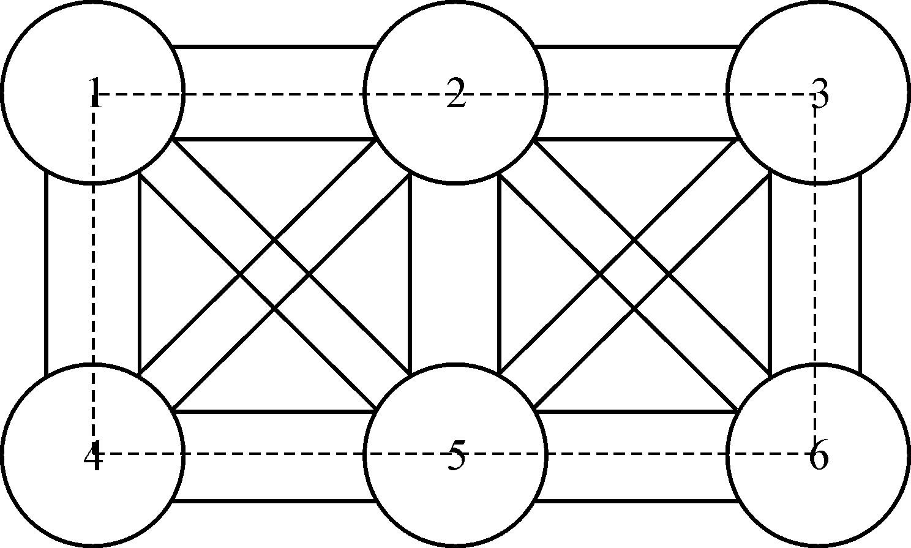
图1.1-1 最短路程示例
【问题分析】
列举一些小数据会发现，答案与m、n的奇偶性有关。具体编程时，还要注意一些特殊情况，如m或者n等于1的情况。
【参考程序】
#include<stdio.h>
using namespace std;
int n，m;
int main（）{
scanf（"%d%d"，&n，&m）;
if（n==1｜｜m==1）
printf（"%.2lf＼n"，（double）（m+n-2）*2）;
else
if（m*n%2==1）
printf（"%.2lf＼n"，（double）m*n-1+1.414）;
else
printf（"%.2lf＼n"，（double）n*m）;
return 0;
}
【例1.1-2】 密码（strongbox.*，64 MB，4秒）
【问题描述】
有一个密码箱，0到n-1中的某些整数是它的密码。且满足：如果a和b都是它的密码，那么（a+b）％n也是它的密码（a，b可以相等，％表示整除取余数，下同），某人试了k次密码，前k-1次都失败了，最后一次成功了。
问：该密码箱最多有多少不同的密码。
【输入格式】
输入第一行两个整数分别表示n，k。
第二行为k个用空格隔开的非负整数，表示每次试的密码。
数据保证存在合法解。
【输出格式】
输出一行一个数，表示结果。
【输入和输出样例】
| strongbox.in | strongbox.out |
| 42 5 | 14 |
| 28 31 10 38 24 |
【数据规模】
对于10%的数据：N≤104 ，k≤100；
另有10%的数据：N≤109 ，k≤100；
另有10%的数据：N≤109 ，k=1；
对于前60%的数据：k≤1000；
对于100%的数据：1≤k≤250000，k≤n≤1014 ；
【问题分析】
首先，二元一次不定方程的一般形式为a*x+b*y=c。其中a，b，c是整数，a*b≠0。此方程有整数解的充分必要条件是GCD（a，b）｜c。
设x0 ，y0 是该方程的一组整数解，那么该方程的所有整数解可表示为：
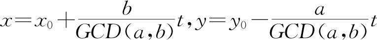
设x是密码，那么观察这个式子：x*k-n*c=GCD（x，n）。
可知：这个方程对于k和c是一定有正整数解的。
所以：一定存在一个k，使得：x*k%n=GCD（x，n）。
由题意，x是密码，那么（x+x）%n=2x%n也是密码，（2x%n+x）%n=3x%n也是密码，以此类推，对于任意正整数k，如果x是密码，那么x*k%n也是密码。
由上可知：x*k%n=GCD（x，n），x*k%n也是密码。
所以：GCD（x，n）也是密码。
结论1：如果x是密码，那么GCD（x，n）也是密码。
设x，y是两个密码，易得（p*x+q*y）%n也是密码（p，q≥0）。
a*x+b*y=GCD（x，y）一定有解，所以：
a*x+b*y≡ (4) GCD（x，y）（mod n）一定有解［当a*x+b*y=GCD（x，y）就可以了］。
因为：a*x+b*y≡a*x+b*y+p*n*x+q*n*y（mod n）
所以：（a+p*n）*x+（b+q*n）*y≡a*x+b*y（mod n）（p，q为任意整数）
所以：（a+p*n）*x+（b+q*n）*y≡GCD（x，y）（mod n）一定有解，且（a+p*n），（b+q*n）≥0。
因为：（（a+p*n）*x+（b+q*n）*y）%n是密码，所以GCD（x，y）也是密码。
结论2：如果x，y是密码，那么GCD（x，y）也是密码。
对于任意一个密码集合A，分析：
1．设A中所有数的GCD为x；
2．由结论2得x∈A；
3．如果密码集合中有比x小的数y，则GCD（x，y）<x，不符合设定，所以x是A中最小的数。
所以A中的所有数为x，2x，3x，4x…
约束条件如下：
1．因为A中的数要尽量多，所以x要尽量小；
2．根据结论1，集合中有两个数为a［k］，GCD（n，a［k］），所以x｜GCD（n，a［k］）；
3．对于任何1≤j<k，x不能整除a［j］（否则a［j］也是密码）。
实现方法：先设a［k］=GCD（n，a［k］），可以先在根号时间复杂度内处理出a［k］的所有因子，存在q数组中，接着去除所有为GCD（a［i］，a［k］）的因数，设去除后最小的因子为x，答案为n/x。
【参考程序】
#include<stdio.h>
#include<algorithm>
using namespace std;
#define LL long long
LL n，k;
LL a［250005］;
int gcd（int a，int b）{
return b？gcd（b，a%b）:a;
}
int main（）{
scanf（"%I64d%I64d"，&n，&k）;
for（int i=1;i<=k;i++）
scanf（"%I64d"，&a［i］）;
a［k］=gcd（a［k］，n）;
for（int i=1;i<k;i++）
a［i］=gcd（a［i］，a［k］）;
for（LL i=1;i*i<=a［k］;i++）
if（a［k］%i==0）{
q［++cnt］=i;
if（i*i!=a［k］）q［++cnt］=a［k］/i;
}
sort（q+1，q+cnt+1）;
for（int i=1;i<k;i++）
f［lower_bound（q+1，q+cnt+1，a［i］）-q］=1;
for（int i=1;i<=cnt;i++）
if（f［i］）
for（int j=1;j<i;j++）
if（q［i］%q［j］==0）
f［j］=1;
for（ans=1;f［ans］;ans++）;
printf（"%d＼n"，n/q［ans］）;
return 0;
}
若a，b为两个整数，且它们的差a-b能被某个自然数m所整除，则称a就模m来说同余于b，或者说a和b关于模m同余，记为：a≡b（mod m）。它意味着：a-b=m*k（k为某一个整数）。
例如，32≡2（mod 5），此时k为6。
对于整数a，b，c和自然数m，n，对模m同余具有以下一些性质：
1．自反性：a≡a（mod m）
2．对称性：若a≡b（mod m），则b≡a（mod m）
3．传递性：若a≡b（mod m），b≡c（mod m），则a≡c（mod m）
4．同加性：若a≡b（mod m），则a+c≡b+c（mod m）
5．同乘性：若a≡b（mod m），则a*c≡b*c（mod m）
若a≡b（mod m），c≡d（mod m），则a*c≡b*d（mod m）
6．同幂性：若a≡b（mod m），则an ≡bn （mod m）
7．推论1:a*b mod k=（a mod k）*（b mod k）mod k
8．推论2：若a mod p=x，a mod q=x，p、q互质，则a mod p*q=x。
证明：因为a mod p=x，a mod q=x，p、q互质
则一定存在整数s，t，使得a=s*p+x，a=t*q+x
所以，s*p=t*q
则一定存在整数r，使s=r*q
所以，a=r*p*q+x，得出：a mod p*q=x
但是，同余不满足同除性，即不满足：a div n≡b div n（mod m）。
【例1.2-1】 指数取余（mod.*，64 MB，1秒）
【问题描述】
输入整数m，n，k，求mn mod k的值。m，n，k*k为长整型范围内的自然数。
【输入格式】
输入一行3个整数，分别为m，n和k。
【输出格式】
输出一行一个整数，表示结果。
【输入和输出样例】
| mod.in | mod.out |
| 2 10 9 | 7 |
【问题分析】
举例来说，如何求389 mod 7呢？
31 ≡3（mod 7）
32 ≡32 （mod 7）≡2（mod 7）
34 ≡（32 ）2 （mod 7）≡22 （mod 7）≡4
38 ≡（34 ）2 （mod 7）≡42 （mod 7）≡2
316 ≡（38 ）2 （mod 7）≡22 （mod 7）≡4
332 ≡（316 ）2 （mod 7）≡42 （mod 7）≡2
364 ≡（332 ）2 （mod 7）≡22 （mod 7）≡4
389 ≡（364 ）*（316 ）*（38 ）*（31 ）（mod 7）≡4*4*2*3（mod 7）≡96（mod 7）≡5（mod 7）
所以，首先将n分解成2的幂次方，存放在一个数组r中，r［i］=1表示有mi 这一项。然后用递推的方法从小到大逐个求出mi mod k的值（j从i到1）存放在数组d中。
其实，我们还可以利用以下递归公式进行求解：
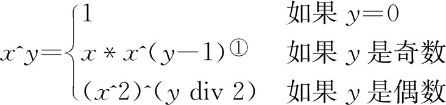
① x^(y-1)表示xy-1 ，下同。
也就是递归地对n进行二进制分解，同时计算。等价于将表达式分解成下面的形式：
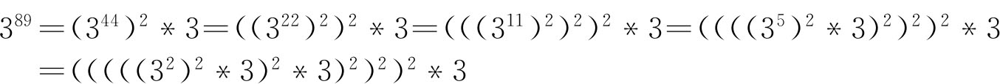
【参考程序】
#include<stdio.h>
using namespace std;
int m，n，k;
int main（）{
scanf（"%d%d%d"，&m，&n，&k）;
int ans=1;
for（;n;n>>=1，m=（long long）m*m%k）
if（n&1）
ans=（long long）ans*m%k;
printf（"%d＼n"，ans）;
return 0;
}
【例1.2-2】 Semi-prime H-numbers（POJ3292）
【问题描述】
形如4n+1的数被称为“H数”，乘法在“H数”组成的集合内是封闭的。在这个集合中只能被1和本身整除的数叫做“H-素数”（不包括1），其余的数被称为“H-合数”。一个“H-合成数”是一个能且只能分解成两个“H-素数”乘积的“H-合数”（可能有多种分解方案）。比如441=21*21=9*49，所以441是“H-合成数”。125=5*5*5，所以125不是“H-合成数”。
求0~h范围内“H-合成数”的个数。
【输入格式】
输入若干行，每行一个小于等于1000001的整数h，一个0表示结束。
【输出格式】
对于每一行输入，输出一个数，表示答案。
【输入和输出样例】
| poj3292.in | poj3292.out |
| 21 | 0 |
| 85 | 5 |
| 789 | 62 |
| 0 |
【问题分析】
利用同余结论，拓展一下筛选法求素数。如果一个数i是H-素数，那么5i+4i*x一定是H数但不是H-素数，因为（5i+4i*x）mod 4=5i mod 4=（5 mod 4）*（i mod 4）=1*1=1，且5i+4i*x=i（4x+5）。
【参考程序】
#include<stdio.h>
using namespace std;
#define MAX_H 1000001+16
bool is_H_prime［MAX_H］，is_H_semiprime［MAX_H］;
int H_prime［MAX_H］;
int accumulate［MAX_H］;
int n;
int main（）{
for（int i=5;i<MAX_H;i+=4）{
if（is_H_prime［i］）continue;
H_prime［++n］=i;
for（int j=i*5;j<MAX_H;j+=i*4）
is_H_prime［j］=true;
}
for（int i=1;i<=n;i++）
for（int j=1;j<=i&&H_prime［i］*H_prime［j］<MAX_H;j++）
is_H_semiprime［H_prime［i］*H_prime［j］］=true;
for（int i=1;i<MAX_H;++i）
accumulate［i］=accumulate［i-1］+is_H_semiprime［i］;
int h;
scanf（"%d"，&h）;
while（h）{
printf（"%d＼n"，accumulate［h］）;
scanf（"%d"，&h）;
}
return 0;
}
一般地，设a1 ，a2 ，a3 ，…ak 是k个非零整数，如果存在一个非零整数d，使得d｜a1 ，d｜a2 ，d｜a3 ，…d｜ak ，那么d就称为a1 ，a2 ，a3 ，…ak 的公约数。公约数中最大的一个就称为最大公约数，记为GCD（a1 ，a2 ，a3 ，…ak ），显然它是存在的，至少为1。当GCD=1时，称这n个数是互质的或既约的。公约数一定是最大公约数的约数。
一般地，设a1 ，a2 ，a3 ，…ak 是k个非零整数，如果存在一个非零整数d，使得a1 ｜d，a2 ｜d，a3 ｜d，…ak ｜d，那么d就称为a1 ，a2 ，a3 ，…ak 的公倍数。公倍数中最小的一个就称为最小公倍数，记为LCM（a1 ，a2 ，a3 ，…ak ），显然它也是存在的。公倍数一定是最小公倍数的倍数。
辗转相除法用来求两个数的最大公约数，又称欧几里得算法，其原理就是：GCD（x，y）=GCD（x，y-x）。
原理的证明如下：
设z｜x，z｜y，则z｜（y-x）。
设z不是x的因子，则z不是x，y-x的公因子。
设z｜x，z不是y的因子，则z不是x，y-x的公因子。
代码实现如下：
int GCD（int x，int y）{
return y==0 ？x : GCD（y，x%y）；
}
如果想要进一步提高GCD的效率，可以通过不断去除因子2来降低常数，这就是所谓的“二进制算法”。
若x=y，则GCD（x，y）=x，否则：
（1）若x，y均为偶数，则GCD（x，y）=2*GCD（x/2，y/2）；
（2）若x为偶数，y为奇数，则GCD（x，y）=GCD（x/2，y）；
（3）若x为奇数，y为偶数，则GCD（x，y）=GCD（x，y/2）；
（4）若x，y均为奇数，则GCD（x，y）=GCD（x-y，y）。
代码实现如下：
inline int GCD(int x，int y){
int i，j;
if(x==0) return y;
if(y==0) return x;
for（i=0;0==（x&1）;++i）x>>=1; // 去掉所有的2
for（j=0;0==（y&1）;++j）y>>=1; // 去掉所有的2
if（j<i） i=j;
while（1）{
if（x<y）x^=y，y^=x，x^=y; // 若x<y交换x，y
if（0==（x-=y）） return y<<i;
// 若x==y，gcd==x==y （就是在辗转减，while（1）控制）
while（0==（x&1））x>>=1; // 去掉所有的2
}
}
求两个数的最小公倍数可以使用“逐步倍增”法，如求3和8的最小公倍数，可以让n从1开始逐步加1，不断检查8*n是不是3的倍数，直到n=3时，8*3=24是3的倍数了。还可以直接使用以下定理来求解。
定理：a、b两个数的最大公约数乘以它们的最小公倍数就等于a和b本身的乘积。
比如，要求3和8的最小公倍数，则LCM（3，8）=3*8 div GCD（3，8）=24。
扩展欧几里德算法是用来在已知（a，b）时，求解一组（p，q），使得p*a+q*b=GCD（a，b）。
首先，根据数论中的相关定理，解一定存在。
其次，因为GCD（a，b）=GCD（b，a%b），所以p*a+q*b=GCD（a，b）=GCD（b，a%b）=p*b+q*a%b=p*b+q*（a-a/b*b）=q*a+（p-a/b*q）*b，这样它就将a与b的线性组合化简为b与a%b的线性组合。
根据前边的结论：a和b都在减小，当b减小到0时，就可以得出p=1，q=0。然后递归回去就可以求出最终的p和q了。
代码实现如下：
#include<stdio.h> //形如ax+by=GCD(a，b)
int extended_gcd(int a，int b，int &x，int &y) {
int ret，tmp;
if (!b){
x=1;
y=0;
return a;
}
ret=extended_gcd(b，a % b，x，y);
tmp=x;
x=y;
y=tmp-a / b * y;
return ret;
}
int main(){
int a，b，x，y，z;
scanf("%d%d"，&a，&b);
z=extended_gcd(a，b，x，y);
printf("%d %d %d＼n"，z，x，y);
return 0;
}
定理1：对于方程a*x+b*y=c，该方程等价于a*x≡c（mod b），有整数解的充分必要条件是：c%GCD（a，b）=0。
根据定理1，对于方程a*x+b*y=c，我们可以先用扩展欧几里德算法求出一组x0 ，y0 ，也就是a*x0 +b*y0 =GCD（a，b），然后两边同时除以GCD（a，b），再乘以c。这样就得到了方程a*x0 *c/GCD（a，b）+b*y0 *c/GCD（a，b）=c，我们也就找到了方程的一个解。
定理2：若GCD（a，b）=1，且x0 ，y0 为a*x+b*y=c的一组解，则该方程的任一解可表示为：x=x0 +b*t，y=y0 -a*t，且对任一整数t，皆成立。
根据定理2，可以求出方程的所有解。但实际问题中，我们往往被要求去求最小整数解，也就是求一个特解x，t=b/GCD（a，b），x=（x%t+t）%t。代码实现如下：
int Extended_Euclid（int a，int b，int& x，int &y）{
if（b==0）{
x=1;
y=0;
return a;
}
int d=Extended_Euclid（b，a%b，x，y）;
int temp=x;x=y;y=temp-a/b*y;
return d;
}
//用扩展欧几里得算法解线性方程ax+by=c;
bool linearEquation（int a，int b，int c，int& x，int &y）{
int d=Extended_Euclid（a，b，x，y）;
if（c%d） return false;
int k=c/d;
x*=k;//+t*b;
y*=k;//-t*a;
//求的只是其中一个解
return true;
}
【例1.3-1】 欧几里德的游戏（game.*，64 MB，1秒）
【问题描述】
欧几里德的两个后代Stan和Ollie正在玩一种数字游戏，这个游戏是他们的祖先欧几里德发明的。给定两个正整数M和N，从Stan开始，取其中较大的一个数，减去较小的数的正整数倍，当然，得到的数K不能小于0。然后是Ollie，对刚才得到的数K，和M，N中较小的那个数，再进行同样的操作，…直到一个人得到了0，他就取得了胜利。下面是他们用（25，7）两个数游戏的过程：
Start:25 7
Stan:11 7 {18 7，11 7，4 7均可能}
Ollie:4 7
Stan:4 3
Ollie:1 3
Stan:1 0
Stan赢得了游戏的胜利。
现在，假设他们“完美”地操作，谁会取得胜利呢？
【输入格式】
第一行为测试数据的组数C。
下面有C行，每行为一组数据，包含两个正整数M和N，M和N的范围不超过长整型。
【输出格式】
对每组输入数据输出一行。
如果Stan胜利，则输出“Stan wins”；否则输出“Ollie wins”。
【输入和输出样例】
| game.in | game.out |
| 2 | Stan wins |
| 25 7 | Ollie wins |
| 24 15 |
【问题分析】
本题很容易让人想起辗转相除法。事实上，辗转相除的除数和余数所形成的各种状态都会在游戏过程中出现。例如下面的游戏过程：
| 游戏过程的各个状态 | 辗转相除的过程 | 属于哪一局 | 所属情况 |
| 50 18 | 50/18=2…14 | 第1局的初状态 | 第一种 |
| 32 18 | 第1局的末状态 | ||
| 14 18 | 18/14=1…4 | 第2局的初状态 （也是末状态） |
第二种 |
| 14 4 | 14/4=3…2 | 第3局的初状态 | 第一种 |
| 10 4 | 第3局的中间状态 | ||
| 6 4 | 第3局的末状态 | ||
| 2 4 | 4/2=2…0 | 第4局 |
我们可以把一步辗转相除以及它与下一步辗转相除之间的游戏状态称作“一局”，辗转相除的被除数和除数实际上对应了每一局的初状态。显然，每一局的初状态是在游戏中必然出现的，而且最后一局只有一个状态，面临最后一局初状态的人就赢得了胜利。因此，本题的大致想法是，尽量让自己能够去取每一局的初状态，让对手去取每局（除最后一局）的末状态。下面就分两种情况来具体说说这个想法的实现。
第一种情况，先举个例子A=32，B=14，A和B的辗转相除过程如下：
32/14=2…4
14/4=3…2
4/2=2…0
这种情况的特点就是：每一步相除所得的商都大于1，即对于每局的初状态（A，B），A>B，都满足：A div B>1。对于这种情况，我们的策略是取走（A div B-1）*B，这样就得到新状态（A mod B+B，B），接下来，对手就没有选择，只能取走B，剩下（A mod B，B），而这就是下一局的初状态，这样就保证下一局的初状态肯定由自己取。这种情况下先取者（Stan）必胜。
第二种情况是某一局的初状态满足A div B=1，即这一局只有一个状态，自己取完之后下一局的初状态必然落在对方手里。以下是这种情况的一般性表述：存在连续的若干局Pi （Ai ，Bi ），…Pj （Aj ，Bj ），i+1<j，Ai div Bi >1，且对于任意一局Pk （Ak ，Bk ），i<k<j，均满足Ak div Bk =1。如果j-i是奇数，则Pj 和Pi 的初状态的持有人相同，如果j-i是偶数，则不同。因此，如果出现j-i为偶数，就有必要在Pi 局中把当局的状态一次性全部取光，即把下一局的初状态“拱手相让”，这样就可以保证在Pj 局中再一次拿到初状态。
总之，首先拿到A div B>1状态的人，总能根据两种情况作出正确的选择，从而在最后一局拿到初状态。因此，首先拿到A div B>1状态的人是必胜的，但如果出现从初状态开始，每局都是A div B=1，如A=24，B=15，则要根据这样的局数多少来判断输赢。
【参考程序】
#include <algorithm>
#include <cstdio>
using namespace std;
int main(){
int c;
scanf("%d"，&c);
for (int i=0; i < c; i++){
int m，n;
scanf("%d%d"，&m，&n);
if (m < n) swap(m，n); /* 保证m>n */
int f=1; /* f=1，表示Stan赢，否则Ollie赢 */
while (m / n==1 && m % n){
int t=m % n;
m=n;
n=t;
f=-f;
}
if (f==1) printf("Stan wins＼n");
else printf("Ollie wins＼n");
}
return 0；
}
【例1.3-2】 青蛙的约会（POJ1061）
【问题描述】
两只青蛙在网上相识了，它们聊得很开心，于是觉得很有必要见一面。它们很高兴地发现它们住在同一条纬度线上，于是它们约定各自朝西跳，直到碰面为止。可是它们出发之前忘记了一件很重要的事情，既没有问清楚对方的特征，也没有约定见面的具体位置。不过青蛙们都是很乐观的，它们觉得只要一直朝着某个方向跳下去，总能碰到对方的。但是除非这两只青蛙在同一时间跳到同一点上，不然是永远都不可能碰面的。为了帮助这两只乐观的青蛙，你被要求写一个程序来判断这两只青蛙是否能够碰面，会在什么时候碰面。
我们把这两只青蛙分别叫做青蛙A和青蛙B，并且规定纬度线上东经0度处为原点，由东往西为正方向，单位长度1米，这样我们就得到了一条首尾相接的数轴。设青蛙A的出发点坐标是x，青蛙B的出发点坐标是y。青蛙A一次能跳m米，青蛙B一次能跳n米，两只青蛙跳一次所花费的时间相同。纬度线总长L米。现在要你求出它们跳了几次以后才会碰面。
【输入格式】
输入只包括一行5个整数x，y，m，n，L，其中：x≠y<2*109 ，0<m，n<2*109 ，0<L<2.1*109 。
【输出格式】
输出一行一个数，表示碰面所需要的跳跃次数。如果永远不可能碰面则输出一行“Impossible”。
【输入和输出样例】
| poj1061.in | poj1061.out |
| 1 2 3 4 5 | 4 |
【问题分析】
两个青蛙跳到同一个点上才算是遇到了，所以可以推出如下式子：
（x+m*t）-（y+n*t）=p*L
其中：t是跳的次数，p是a青蛙跳的圈数跟b青蛙的圈数之差。整个就是路程差等于纬度线周长的整数倍。
转化一下：（n-m）*t+L*p=x-y
令：a=n-m，b=L，c=GCD（a，b），d=x-y
有：a*t+b*p=d （1）
要求的是：t的最小整数解。
用扩展欧几里德求出其中一组解t0 、p0 ，并令：c=GCD（a，b）
有：a*t0 +b*p0 =c （2）
因为：c=GCD（a，b），所以：a*t/c是整数，b*t/c也是整数，所以d/c也需要是整数，否则无解。
（2）式两边都乘（d/c），得到：a*t0 *（d/c）+b*p0 *（d/c）=d
所以：t0 *（d/c）是最小的解，但有可能是负数。
因为：a*（t0 *（d/c）+b*n）+b*（p0 *（d/c）-a*n）=d，其中的n是自然数
所以，解为（t0 *（d/c）% b+b）% b
还有一个问题，如何用扩展的欧几里德求出t0 、p0 呢？
对于不完全为0的非负整数a和b，GCD（a，b）表示a，b的最大公约数。
那么存在整数x和y，使得GCD（a，b）=a*x+b*y
不妨设：a>b
①当b=0时，GCD（a，b）=a，此时x=1，y=0;
②当a*b≠0时，设a*x+b*y=GCD（a，b）; （3）
b*x0 +（a % b）*y0 =GCD（b，a % b）; （4）
由欧几里德公式GCD（a，b）=GCD（b，a % b），以及（3）和（4），得到：
a*x+b*y
=b*x0 +（a%b）*y0
=b*x0 +（a-a/b*b）*y0
=a*y0 +（ x0 -a/b*y0 ）*b
所以：x=y0 ，y=x0 -a/b*y0 。
由此可以得出扩展欧几里德的递归程序：
#include<iostream>
using namespace std;
int exgcd（int a，int b，int &x，int &y）{
if（b==0）{
x=1，y=0;
return a;
}
int gcd=exgcd（b，a%b，x，y）;
int t=x;
x=y;
y=t-a/b*y;
return gcd;
}
int main（）{
int nok=0，x，y，m，n，l，X，Y，gcd;
cin>>x>>y>>m>>n>>l;
if（（x-y）%（gcd=exgcd（n-m，l，X，Y））!=0）
cout<<"Impossible"<<endl;
else
cout<<（（long long）（x-y）/gcd*X%（l/gcd）+（l/gcd））%（l/gcd）<<endl;
return 0;
}
若a*x≡1（mod b），a，b互质，则称x为a的逆元，记为a-1 。
根据逆元的定义，可转化为a*x+b*y＝1，用拓展欧几里得法求解。逆元可以用来在计算（t/a） mod b时，转化为t*a-1 mod b。
利用快速幂及扩展欧几里德算法求逆元的代码如下：
void exgcd（int a，int b，int c，int &x，int &y）{
if（a==0）{
x=0;y=c/b;
return;
}
else{
int tx，ty;
exgcd（b%a，a，tx，ty）;
x=ty-（b/a）*tx;
y=tx;
return;
}
}
求逆元还有一个线性算法，具体过程如下。
首先，1-1 ≡1(mod p)
然后，我们设p=k*i+r,r<i,1<i<p，再将这个式子放到mod p意义下就会得到：
k*i+r≡0(mod p)
再两边同时乘上i-1 ，r-1 就会得到：
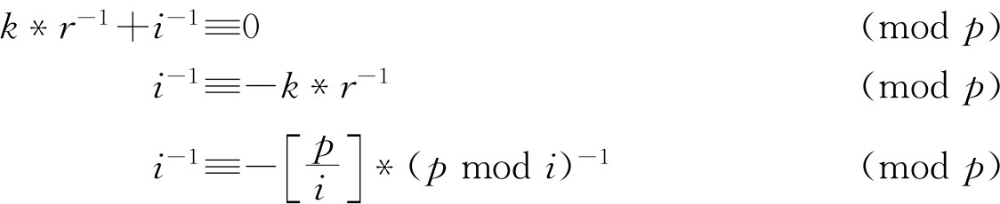
于是，就可以从前面推出当前的逆元了。代码也就一行：
A［i］=-（p/i）*A［p % i］;
实际上，这也提供了一种Θ(log2 p)的时间内求出单个数逆元的方法，只要直接按照那个公式递归就可以了。可以证明：p mod i<i/2，每次递归问题规模减半，最终只会有Θ(log2 p)次递归。
【例1.4-1】 Sumdiv（POJ1845）
【问题描述】
题目大意就是求AB 的所有约数（即因子）之和，并对其取模9901再输出。
【输入样例】
2 3
【输出样例】
15
【问题分析】
首先，本题需要用到以下3个相关定理。
1．整数的唯一分解定理
任意正整数都有且只有一种方式写出其素因子的乘积表达式。
A=（p1 ^k1 ）*（p2 ^k2 ）*（p3 ^k3 ）*…*（pn ^kn ） 其中,pi 均为素数
2．约数和公式
对于已经分解的整数A=（p1 ^k1 ）*（p2 ^k2 ）*（p3 ^k3 ）*…*（pn ^kn ）
有A的所有因子之和为：
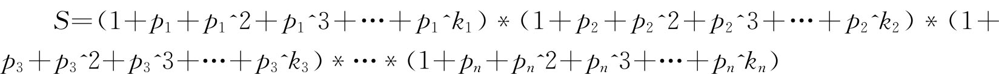
3．同余模公式
（a+b） % m=（a % m+b % m） % m
（a*b） % m=（a % m*b % m） % m
有了上面的数学基础，只要按以下步骤和方法求解。
1．对A进行素因子分解
分解A的方法：A首先对第一个素数2不断取模，A % 2=0时，记录2出现的次数加1，A/=2；当A % 2≠0时，则A对下一个连续素数3不断取模…以此类推，直到A=1为止。
注意特殊判定，当A本身就是素数时，无法分解，它自己就是其本身的素数分解式。
最后得到：A=p1 ^k1 *p2 ^k2 *p3 ^k3 *…*pn ^kn
所以：A^B=p1 ^（k1 *B）*p2 ^（k2 *B）*…*pn ^（kn *B）
2．求A^B的所有约数之和
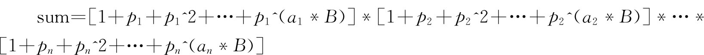
3．用递归二分求等比数列1+pi +pi ^2+pi ^3+…+pi ^n
（1）若n为奇数，一共有偶数项，则：
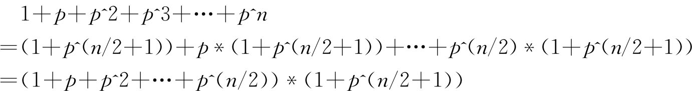
上式的前半部分恰好就是原式的一半，那么只需要不断递归二分求和就可以了，后半部分为幂次式，将在下面第4点讲述计算方法。
（2）若n为偶数，一共有奇数项，则:
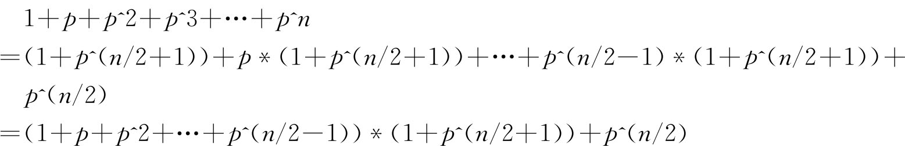
上式的前半部分恰好就是原式的一半，依然递归求解。
4．反复平方法计算幂次式p^n
这是本题关键所在，求n次幂方法的好坏，决定了本题是否会超时。以p=2，n=8为例，常规是通过连乘法求幂，即2^8=2*2*2*2*2*2*2*2，这样做的要做8次乘法。而反复平方法则不同，定义幂sq=1，再检查n是否大于0。
While，循环过程若发现n为奇数，则把此时的p值乘到sq
{
n=8>0，把p自乘一次，p=p*p=4，n取半n=4
n=4>0，再把p自乘一次，p=p*p=16，n取半n=2
n=2>0，再把p自乘一次，p=p*p=256，n取半n=1，sq=sq*p
n=1>0，再把p自乘一次，p=p*p=256^2，n取半n=0，弹出循环
}
则sq=256就是所求，显然反复平方法只做了3次乘法。
【参考程序】
#include<iostream>
using namespace std;
const int mod=9901;
int A，B;
int p[10001]，n[10001];
long long power(long long p，long long n) {//反复平方法求(p^n) % mod
long long sq=1;
while(n){
if(n&1)
sq=(sq*p)%mod;
n>>=1;
p=p*p%mod;
}
return sq;
}
long long sum(long long p，long long n){
//递归二分求 (1+p+p^2+p^3+...+p^n) % mod
//奇数二分式 (1+p+p^2+...+p^(n/2)) * (1+p^(n/2+1))
//偶数二分式 (1+p+p^2+...+p^(n/2-1)) * (1+p^(n/2+1))+p^(n/2)
if(n==0)
return 1;
if(n%2) //n为奇数
return (sum(p，n/2)*(1+power(p，n/2+1)))%mod;
else //n为偶数
return (sum(p，n/2-1)*(1+power(p，n/2+1))+power(p，n/2))%mod;
}
int main(){
while(cin>>A>>B){
int k=0; //指针，常规做法：分解整数A (A为非质数)
for(int i=2;i*i<=A;){ //根号法+递归法
if(A%i==0){
p[++k]=i;
n[k]=0;
while(!(A%i)){
n[k]++;
A/=i;
}
}
if(i==2) //奇偶法
i++;
else
i+=2;
}
//特殊判定：分解整数A (A为质数)
if(A!=1){
p[++k]=A;
n[k]=1;
}
int ans=1; //约数和
for(int i=1;i<=k;i++)
ans=(ans*(sum(p[i]，n[i]*B)%mod))%mod;
//n[i]*B可能会超过int，因此用long long
cout<<ans<<endl;
}
return 0;
}
【例1.5-1】 孙子算经
【问题描述】
今有物不知其数，三三数之余二；五五数之余三；七七数之余二。问物几何？
【问题分析】
答曰：二十三。
古人的口诀：三人同行七十稀，五树梅花廿一枝，七子团圆月正半，除百零五便得知。
现代同余理论：23≡2×70+3×21+2×15（mod 105），问，70，21，15如何得到的？
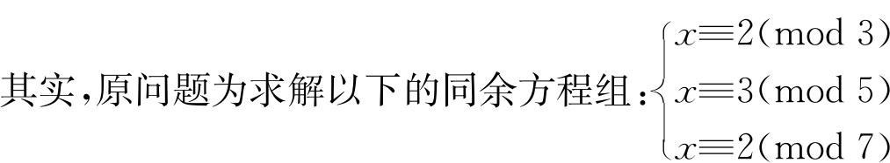
首先，若X0 为上述同余方程组的解，则X0 +105×k（k为整数）也为上述同余方程组的解。
其次，古人的口诀已经提示我们先解下面三个特殊的同余方程组：
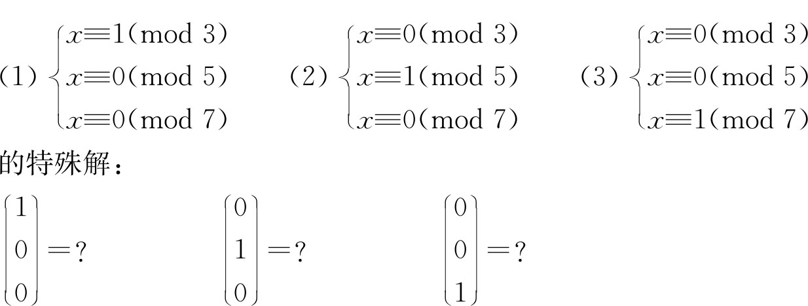
以方程（1）为对象，相当于解一个这样的同余方程：35y≡1（mod 3），为什么呢？原因是从（1）的模数及条件知，x应是35的倍数，于是可以假设x＝35y，有：35y≡1（mod 3），相当于2y≡1（mod 3），解出y=2（mod 3），于是x≡35×2≡70（mod 105）。类似地，得到（2）、（3）方程的模105的解21、15。于是有：
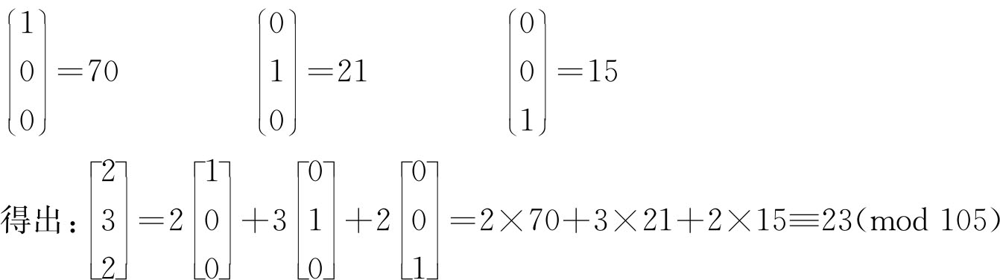
下面，我们就来介绍“中国剩余定理”。
设自然数m1 ，m2 ，…mr 两两互素，并记N=m1 *m2 *…*mr ，则同余方程组：
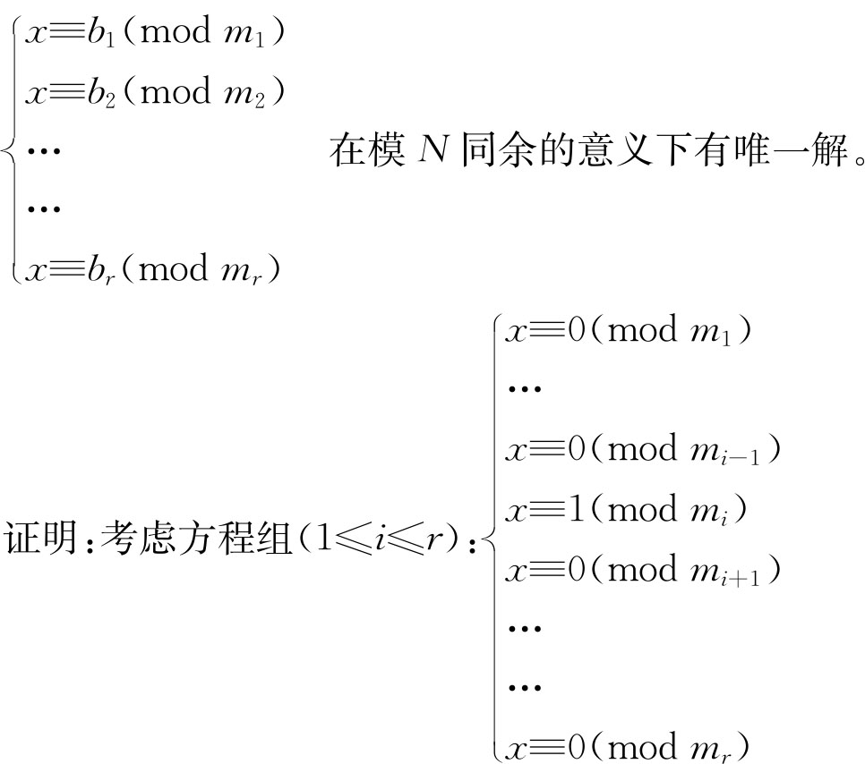
由于诸mi （1≤i≤r）两两互素，这个方程组作变量替换，令x=（N/mi ）*y，方程组等价于解同余方程：（N/mi ）y≡1（mod mi ），若要得到特解yi ，只要令：xi =（N/mi ）*yi ，则方程组的解为：x0 =b1 x1 +b2 x2 +…+br xr （mod N），在模N意义下唯一。
中国剩余定理就是用来求解“模线性方程组”的解，即：
a≡B［1］（mod W［1］）
a≡B［2］（mod W［2］）
…
a≡B［n］（mod W［n］）
其中：W，B已知，W［i］>0且W［i］与W［j］互质，求a。
【参考程序】
#include<iostream>
using namespace std;
int exgcd（int a，int b，int &x，int &y）{
if（b==0）{
x=1，y=0;
return a;
}
int gcd=exgcd（b，a%b，x，y）;
int t=x;
x=y;
y=t-a/b*y;
return gcd;
}
int China（int W［］，int B［］，int k）{//W为按多少排列，B为剩余个数，W>B，k为组数
int x，y，a=0，m，n=1;
for（int i=0;i<k;i++）
n*=W［i］;
for（int i=0;i<k;i++）{
m=n/W［i］;
exgcd（W［i］，m，x，y）;
a=（a+y*m*B［i］）%n;
}
if（a>0）
return a;
else
return a+n;
}
【例1.5-2】 Biorhythms（POJ1006）
【问题描述】
人自出生起就有体力，情感和智力三个生理周期，分别为23，28和33天。一个周期内有一天为峰值，在这一天，人在对应的方面（体力，情感或智力）表现最好。通常这三个周期的峰值不会是同一天。现在给出三个日期，分别对应于体力，情感，智力出现峰值的日期。然后再给出一个起始日期，要求从这一天开始，算出最少再过多少天后三个峰值同时出现。
【问题分析】
首先我们要知道，任意两个峰值之间一定相距整数倍的周期。假设一年的第N天达到峰值，则下次达到峰值的时间为N+Tk（T是周期，k是任意正整数）。所以，三个峰值同时出现的那一天（S）应满足：
S=N1 +T1 *k1 =N2 +T2 *k2 =N3 +T3 *k3
N1 ，N2 ，N3 分别为为体力，情感，智力出现峰值的日期，T1 ，T2 ，T3 分别为体力，情感，智力周期。我们需要求出k1 ，k2 ，k3 三个非负整数使上面的等式成立。
想直接求出k1 ，k2 ，k3 貌似很难，但是我们的目的是求出S，可以考虑从结果逆推。根据上面的等式，S满足三个要求：除以T1 余数为N1 ，除以T2 余数为N2 ，除以T3 余数为N3 。这样我们就把问题转化为求一个最小数，该数除以T1 余N1 ，除以T2 余N2 ，除以T3 余N3 。直接使用中国剩余定理即可。
【参考程序】
#include<iostream>
using namespace std;
int main（）{
int p，e，i，d，T=1;
cin>>p>>e>>i>>d;
do{
int lcm=21252; //lcm（23，28，33）
int ans=（5544*p+14421*e+1288*i-d+lcm）%lcm;
if（ans==0）
ans=lcm;
cout<<"Case "<<T++<<": the next triple peak occurs in "<<ans<<" days."<<endl;
cin>>p>>e>>i>>d;
}while（p!=-1）;
return 0;
}
斐波那契数，亦称斐波那契数列，又称黄金分割数列。指的是这样一个数列：0、1、1、2、3、5、8、13、21、…在数学上，斐波纳契数列以递归的方法定义：F（0）=0，F（1）=1，F（n）=F（n-1）+F（n-2）（n≥2，n为自然数），用文字来说，就是斐波那契数列由0和1开始，之后的斐波那契数就由之前的两数相加。
下面，我们用“待定系数法”推导斐波那契数的通项公式。
设常数r和s，使得：
F(n)-rF(n-1)=s*［F(n-1)-r*F(n-2)］
移项合并，得到：
r+s=1,-rs=1
在n≥3时，有：
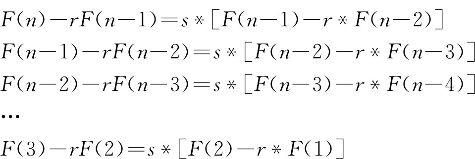
联立以上n-2个式子，得到：
F(n)-rF(n-1)=sn-2 *［F(2)-rF(1)］
因为：
s=1-r,F(1)=F(2)=1
上式可化简得：
F(n)=sn -1+r*F(n-1)
那么：
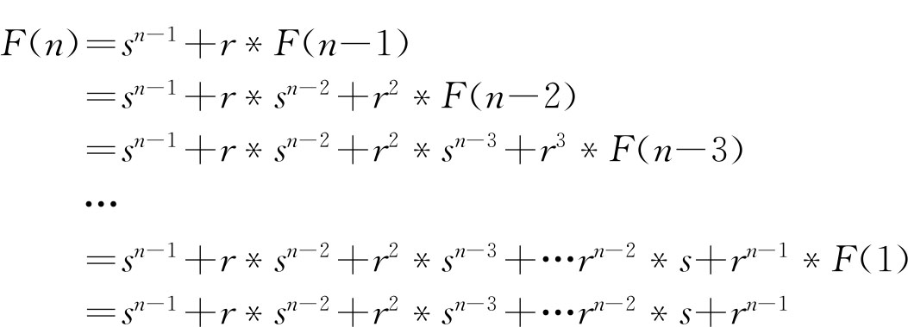
（这是一个以sn-1 为首项、以rn-1 为末项、
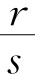
为公比的等比数列的各项的和）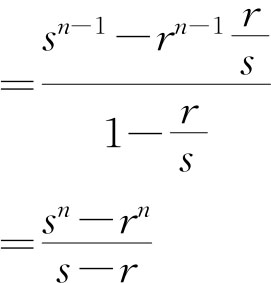
因为：r+s=1,-rs=1的一组解为：
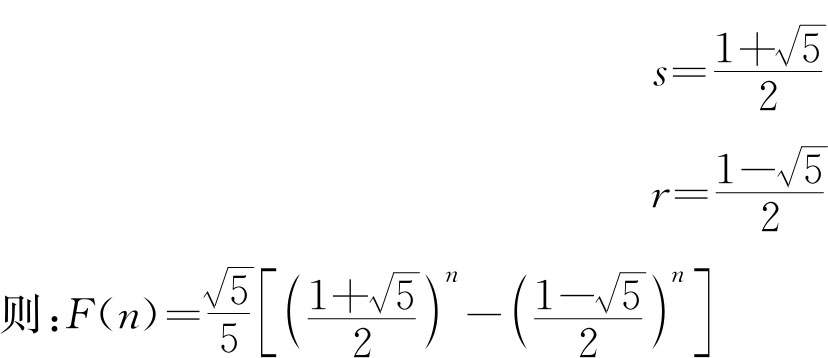
【例1.6-1】 普通递归关系（recur.*，64 MB，1秒）
【问题描述】
考虑以下定义在非负整数n上的递归关系：
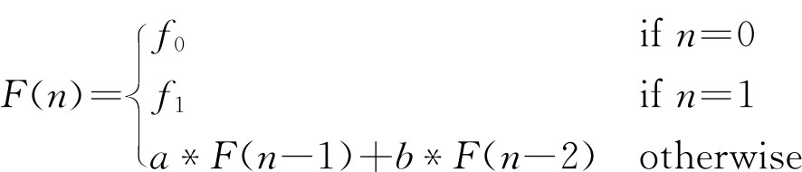
其中a、b是满足以下两个条件的常数：
（1）a2 +4b>0
（2）
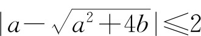
给定f0 ,f1 ,a，b和n，请你写一个程序计算F(n)，可以假定F(n)是绝对值不超过109 的整数（四舍五入）。
【输入格式】
输入文件一行依次给出5个数f0 ,f1 ,a,b和n,f0 ,f1 是绝对值不超过109 ，n是非负整数，不超过109 。另外，a、b是满足上述条件的实数，且|a|,|b|≤106 。
【输出格式】
输出一行一个数，即F(n)。
【输入和输出样例】
| recur.in | recur.out |
| 0 1 1 1 20 | 6765 |
| 0 1-1 0 1000000000 | -1 |
| -1 1 4 -3 18 | 387420487 |
【问题分析】
本题可以采用以上推导斐波那契数的方法，推出F(n)的通项公式：
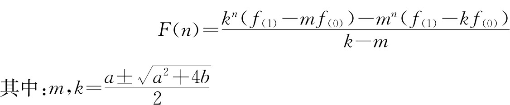
具体编程实现时，还要注意在指数运算中，底数不能为负实数。另外，题目中要求的F（n）在109 以内，由此可知F（n）一定是一个周期函数，因为如果单调的话，很快就会越界。所以也可以利用它的周期性来求解。
【参考程序】
#include<iostream>
#include<stdio.h>
#include<stdlib.h>
#include<string.h>
#include<math.h>
#include<algorithm>
using namespace std;
int n;
double f0，f1，a，b，m，k，ans;
inline double s（double a，int b）{
if（b==0）
return 1;
double k=s（a，b/2）;
if（b%2==0）
return k*k;
else
return k*k*a;
}
int main（）{
cin>>f0>>f1>>a>>b>>n;
if（f0==0 && f1==0）{
printf（"0"）;
return 0;
}
m=（a+sqrt（a*a+4*b））/2;
k=（a-sqrt（a*a+4*b））/2;
ans=（s（k，n）*（f1-m*f0）-s（m，n）*（f1-k*f0））/（k-m）;
printf（"%.0lf"，ans）;
return 0;
}
【例1.6-2】 数字迷阵（matrix.*，64 MB，1秒）
【问题描述】
小可可参观科学博物馆时看到一件藏品，上面有密密麻麻的数字，如下所示：
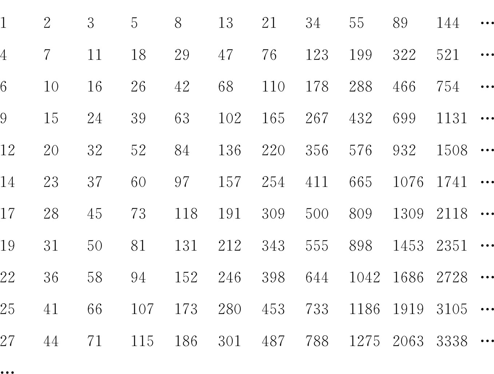
仔细一分析，发现还挺有规律。原来，第一行是斐波那契（Fibonacci）数列。即，该行中除了第一个和第二个数分别为1和2之外，其他数都是其左侧相邻的两个数之和。其后各行也类似于Fibonacci数列。只是第i行的第一个数是前i-1行中未出现的最小正整数，而其第二个数与该行第一个数以及所在行的编号相关，即A［i,2］=2A［i,1］-(i-1)。如在第一行中未出现的最小正整数为4，前三行中未出现的最小正整数为9。故第二行以4和7开头，而第四行以9和15开头。
小可可高兴地把这个发现告诉了爷爷。爷爷问道：你能否一口报出第i行、第j列的那个数对m取模的结果是多少呢？
聪明的小可可通过心算就能知道答案。你是否能编写程序求解呢？
【输入格式】
输入每行有三个分别用一个空格隔开的正整数，分别是i、j和m。其中,i,j≤109 ,2≤m≤104 。
【输出格式】
每行输出对应的第i行、第j列的那个正整数对m取模的结果。
【输入和输出样例】
| matrix.in | matrix.out |
| 1 2 99 | 2 |
| 9 1 999 | 22 |
【问题分析】
首先，我们判断出每行都是变形的斐波那契数列，又因为A［i,2］=2A［i,1］-(i-1)，所以本质上A［i，j］只与第i行的第一个元素有关，那么如何求A［i，1］呢？
我们发现：第一列的增加值是2或3，它们是否有规律呢、是否与斐波那契数列有关呢？仔细研究发现：第1次（第2行）加3，后面2次（第3—4行）分别加2—3，再后面的3次（第5—7）是前两次加的序列和，即：3—2—3，再往后的5次（第8—12）：2—3—3—2—3（5次），3—2—3—2—3—3—2—3（8次），…每一次往后推的项数满足斐波那契数列数，且就是前面两次的那些项连接起来。其实在数学上有一个结论，即第一列通项: f［i］=trunc（i*t+i-1），其中t=（1+sqrt（5））/2。
所以，我们可以用Θ(1)的时间求得A［i，1］，但如果用Θ(n)的时间去求A［i，j］，还是超时，这时我们可以用上一个例子中的结论。以第1行为例（普通的斐波那契数列），令f（0）=1，f（1）=1，a=1，b=1，得到：
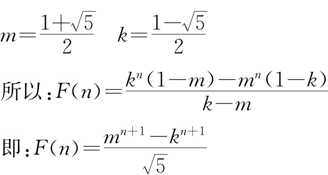
这就是普通的斐波那契数列的通项公式，这样本题的程序就很容易了，其他行只是f（0）的f（1）初值不一样而已。
【参考程序】
#include<iostream>
#include<stdio.h>
#include<stdlib.h>
#include<string.h>
#include<math.h>
#include<algorithm>
#define L long long
using namespace std;
int n，m，p，x[100][3][3]，y[3][3]，z[3][3]，a[100]，k1，k2，ans;
int main（）{
int i，j，k，l;
scanf（"%d%d%d"，&n，&m，&p）;
m--;
x[0][1][2]=x[0][2][1]=x[0][2][2]=1;
a[0]=1;
for（i=1;a[i-1]*2<=m;i++）{
a[i]=a[i-1]*2;
for（j=1;j<=2;j++）
for（k=1;k<=2;k++）
for（l=1;l<=2;l++）
x[i][j][k]=（x[i][j][k]+（L）x[i-1][j][l]*x[i-1][l][k]）%p;
}
y[1][1]=y[2][2]=1;
for（i--;i>=0;i--）
if（a[i]<=m）{
m-=a[i];
for（j=1;j<=2;j++）
for（k=1;k<=2;k++）
for（l=1;l<=2;l++）
z[j][k]=（z[j][k]+（L）x[i][j][l]*y[l][k]）%p;
for（j=1;j<=2;j++）
for（k=1;k<=2;k++）{
y[j][k]=z[j][k];
z[j][k]=0;
}
}
k1=（（L）（n*（1+sqrt（5））/2+n-1））%p;
k2=（（2*k1-n+1）%p+p）%p;
ans=（（L）k1*y[1][1]+（L）k2*y[1][2]）%p;
printf（"%d"，ans）;
return 0;
}
卡特兰数又称卡塔兰数（Catalan Number），是组合数学中一个经常出现在各种计数问题中的数列。其前几项为:1，2，5，14，42，132，429，1430，4862，16796，58786，208012，742900，…
求卡特兰数列的第n项，可以用以下几个公式：
1． 递归公式1
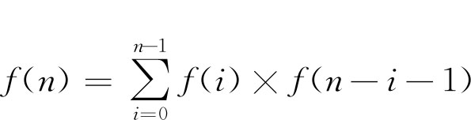
2． 递归公式2
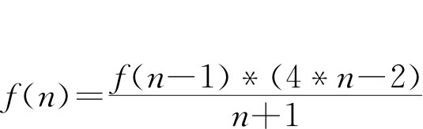
3． 组合公式1
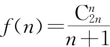
4． 组合公式2
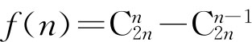
【例1.7-1】 二叉树的计数
【问题描述】
已知一颗二叉树有n个结点，问：该二叉树能组成多少种不同的形态？
【问题分析】
如图1.7-1所示，假设该二叉树的左子树有i个结点，则右子树有n-i-1个结点。用f（n）表示n个结点的二叉树不同的形态数，则左子树和右子树就可以递归地表示为f（i）和f（n-i-1），再根据乘法原理，总的答案即为：
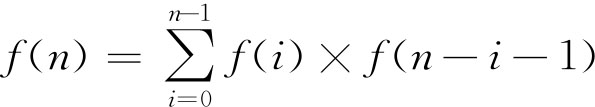
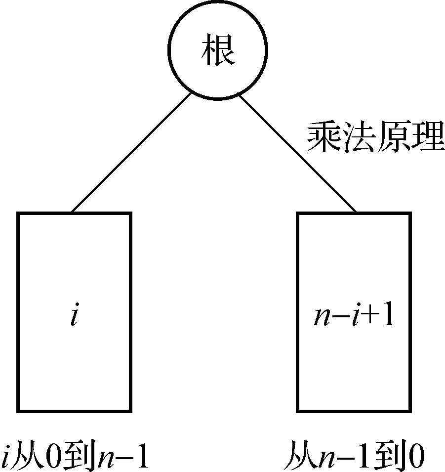
图1.7-1 二叉树形态
【例1.7-2】 AB排列问题
【问题描述】
有n个A和n个B排成一排，从第1个位置开始到任何位置，B的个数不能超过A的个数，问：这样的排列有多少种？
如：
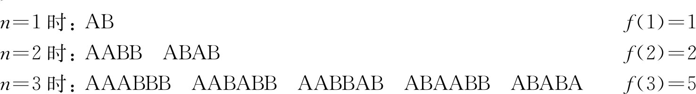
【问题分析】
可以用一种形象的递推方法，用
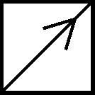
表示A，用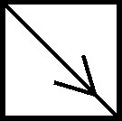
表示B，则根据图1.7-2所示可以递推求出F（5）。再进一步推导，得出结论就是卡特兰数。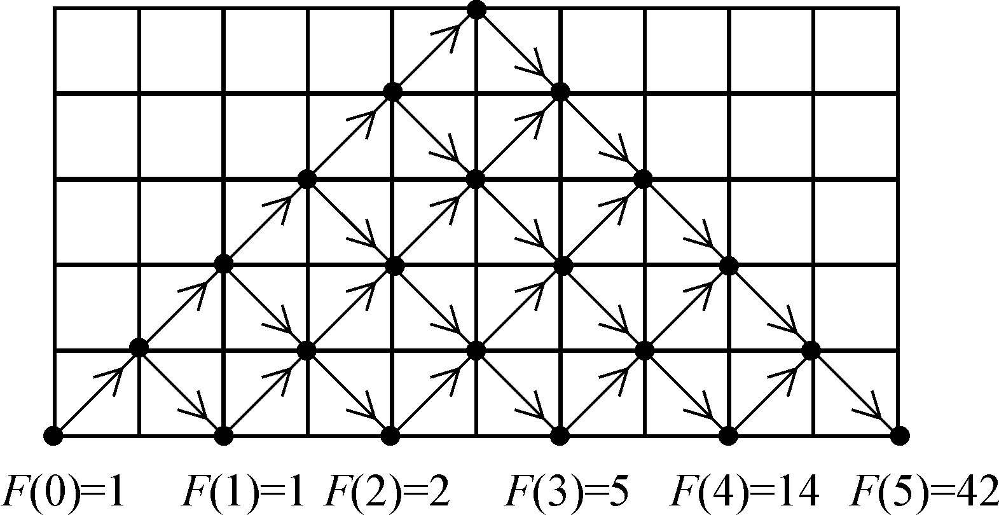
图1.7-2 形象化的递推
【例1.7-3】 乘法加括号（NOI1988）
【问题描述】
对于连乘a0 *a1 *a2 *…*an ，加了括号后可改变它的运算顺序。问：有多少种不同的运算顺序？
【问题分析】
n=1，a0 *a1 ，f(1)=1
n=2，a0 *a1 *a2 ,a0 *(a1 *a2 ),f(2)=2
n=3，a0 *a1 *a2 *a3 ,a0 *(a1 *a2 )*a3 ,a0 *a1 *(a2 *a3 )，a0 *(a1 *a2 *a3 ),a0 *(a1 *(a2 *a3 )),f(3)=5
将a0 *a1 *a2 *…*an 表示成一颗二叉树，把*逐个作为根，得到：f(0)*f(n-1)+f(1)*f(n-2)+…+f(n-1)*f(0)
发现答案就是卡特兰数。
【例1.7-4】 欧拉多边形分割问题（cut.*，64 MB，1秒）
【问题描述】
设有一个凸n边形，可以用n-3条不相交的对角线将n边形分成n-2个互相没有重叠的三角形，例如n=5，共有图1.7-3所示的5种方法。
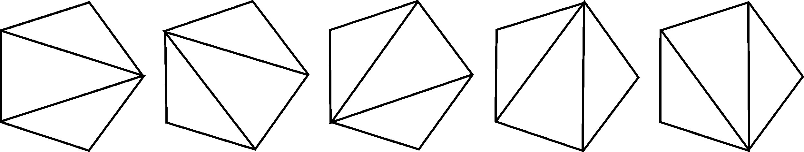
图1.7-3 凸n边形的划分
程序要求：当给出凸n边形的边数n（n≤1000），求出共有多少种不同的分法。
【问题分析】
对任意给定的一个N边形，任意选定一条边，则该边必是某一组成分割的三角形的一边，它的两个端点也是该三角形的两个端点，另一个端点可以来自于另外N-2个顶点，这个三角形将N边形分成二个多边形，图1.7-4所示是对一个六边形选定底边时的分割情况情况。
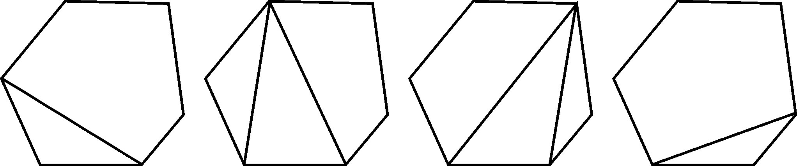
图1.7-4 六边形划分
根据加法原理和乘法原理有：
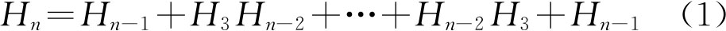
另外任取一条对角线Pij ，将N边形一分为二，二部分分别为多边形，它们的边数之和为n+2，从一个顶点出发的n-3条对角线形成的n边形分割数为：H3 Hn-1 +H4 Hn-2 +…+Hn-2 H4 +Hn-1 H3 ，从n个顶点出发的所有对角线形成的n边形分割数为n（H3 Hn-1 +H4 Hn-2 +…+Hn-2 H4 +Hn-1 H3 ），由于一条对角线有两个端点，所以，在上面的统计中，每条对角线出现了两遍，从所有的对角线出发形成的n边形分割数为：n（H3 Hn-1 +H4 Hn-2 +…+Hn-2 H4 +Hn-1 H3 ）/2，任何一个分割是由n-3条对角线组成的，每个分割在上式中被重复统计了n-3遍，所以：
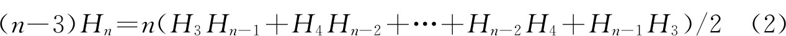
将（1）式写成n+1的情况有：
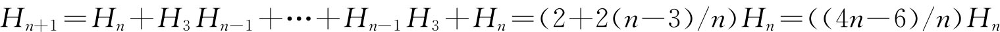
显然，n边形的分割总数Hn =Cn -2，只要设H2 =1即可。本题实际上是要求某个卡特兰数，由于n较大，因此要用高精度运算。在选用计算公式时，可选用递推公式，也可通过质因子的处理来获得最后的乘式以求得结果。
【参考程序】
#include<iostream>
#include<stdio.h>
using namespace std;
int f[2][1001][801];
void pluss（int *a，int *b，int *c）{
a[0]=max（b[0]，c[0]）;
a[1]=0;
for（int i=1;i<=a[0];i++）{
a[i+1]=（b[i]+c[i]）/1e9;
a[i]+=b[i]+c[i]-（a[i+1]）*1e9;
}
if（a[a[0]+1]）a[0]++;
}
void Print（int *x）{
printf（"%d"，x[x[0]]）;
for（int i=x[0]-1;i>=1;i--）
printf（"%09d"，x[i]）;
printf（"＼n"）;
}
int main（）{
int n;
scanf（"%d"，&n）;
n-=2;
f[0][0][0]=f[0][0][1]=1;
f[1][0][0]=f[1][0][1]=1;
for（int i=0;i<=n;i++）
for（int j=1;j<=i;j++）
pluss（f[i&1][j]，f[（i-1）&1][j]，f[i&1][j-1]）;
Print（f[n&1][n]）;
return 0;
}
素数又称质数，是指一个大于1的正整数，如果除了1和它本身以外，没有其他的约数，例如2，3，5，7，3 021 377等，反之就是合数。1既不是素数也不是合数。
素数就像整数世界里的原子，整个整数世界都是由这些素数原子组成的，比如15=3*5，121=11*11等等。有关素数的问题是数论研究的主要课题，我国著名数学家华罗庚教授及陈景润、王元研究员、潘承洞教授等对素论的研究都有重要贡献。
早在2000多年前的古希腊，伟大的数学家欧几里德就用反证法证明了：素数有无穷多个。在他的不朽名著《几何原本》第四卷命题20中是这样叙述的：预先给定几个素数，则有比他们更多的素数。他是这样证明的：设a，b，c是给定的素数，构造一个新的数t=a*b*c+1，则已有的素数a，b，c均不能整除t，所以要么t本身就是素数，此时t不等于a，b，c中任意一个数；要么t能被不同于a，b，c的某一个素数整除，因此必然存在一个素数p不同于已有的素数a，b，c。例如:2*3*5+1=31，3*5*7+1=106=2*53。也就是说，有了n个素数，就可以构造出第n+1个素数，因此素数有无穷多个。
素数的分布也很不均匀，下表部分列出了小于x的素数的个数函数pi （x）。
| x | pi （x） |
| 10 | 4 |
| 100 | 25 |
| 1，000 | 168 |
| 10，000 | 1，229 |
| 100，000 | 9，592 |
| 1，000，000 | 78，498 |
| 10，000，000 | 664，579 |
| 100，000，000 | 5，761，455 |
| 1，000，000，000 | 50，847，534 |
| 10，000，000，000 | 455，052，511 |
| 100，000，000，000 | 4，118，054，813 |
| 1，000，000，000，000 | 37，607，912，018 |
| 10，000，000，000，000 | 346，065，536，839 |
| 100，000，000，000，000 | 3，204，941，750，802 |
| 1，000，000，000，000，000 | 29，844，570，422，669 |
| 10，000，000，000，000，000 | 279，238，341，033，925 |
| 100，000，000，000，000，000 | 2，623，557，157，654，233 |
| 1，000，000，000，000，000，000 | 24，739，954，287，740，860 |
| 10，000，000，000，000，000，000 | 234，057，667，276，344，607 |
| 100，000，000，000，000，000，000 | 2，220，819，602，560，918，840 |
对于数据范围比较小的情况下，判断素数可以采用“穷举法”，代码如下：
void main（）{
int i，n;
scanf（"%d"，&n）;
for（i=2;i<sqrt（n）;i++）
if（n%i==0）break;
if（i<n｜｜n==1）puts（"No"）;
else puts（"Yes"）;
}
对于数据范围比较大的情况下，需要找出所有素数，则可以采用“筛选法”求出“素数表”。具体方法如下：
先将2～N之间的所有数写在纸上：2，3，4，5，6，7，8，9，10，11，12，13，14，15，16，17，18，19，20，21，22，23，24，24，26，27，28，29，30，31，32，33，34，35，36，37，38，39，40…
在2的上面画一个圆圈，然后划去2的其他倍数；第一个既未画圈又没有被划去的数是3，将它画圈，再划去3的其他倍数；现在既未画圈又没有被划去的第一个数是5，将它画圈，并划去5的其他倍数…依次类推，一直到所有小于或等于N的各数都画了圈或划去为止。这时，表中画了圈的以及未划去的那些数正好就是小于N的素数。实现代码如下：
void make_prime（）{
memset（prime，1，sizeof（prime））;
prime[0]=false;
prime[1]=false;
int N=31700;
for （int i=2;i<N;i++）
if （prime[i]）{
primes[++cnt]=i;
for （int k=i*i; k<N; k+=i）
prime[k]=false;
}
return;
}
仔细分析上述代码发现，这种方法会造成重复筛除合数，影响效率。比如30，在i=2的时候，k=2*15筛了一次；在i=5，k=5*6的时候又筛了一次。所以，也就有了“快速线性筛法”。快速线性筛法没有冗余，不会重复筛除一个数，所以“几乎”是线性的，虽然从代码上分析，时间复杂度并不是Θ(n)。先看实现代码：
#include<iostream>
usingnamespace std;
constlongN=200000;
longprime[N]={0}，num_prime=0;
intisNotPrime[N]={1，1};
intmain（）{
for（longi=2;i<N;i++）{
if（!isNotPrime[i]）
prime[num_prime++]=i;
//关键处1
for（longj=0;j<num_prime && i*prime[j]<N;j++）{
isNotPrime[i*prime[j]]=1;
if（!（i % prime[j]）） //关键处2
break;
}
}
return 0;
}
首先，先明确一个条件，任何合数都能表示成一系列素数的积。
不管i是否是素数，都会执行到“关键处1”。
1．如果i是素数的话，那简单，一个大的素数i乘以不大于i的素数，这样筛除的数跟之前的是不会重复的。筛出的数都是n=p1 *p2 的形式，p1 和p2 不相等；
2．如果i是合数，此时i可以表示成递增素数相乘i=p1 *p2 *…*pn ，pi 都是素数（2≤i≤n），pi ≤pj （i≤j），p1 是最小的系数。
根据“关键处2”的定义，当p1 ==prime［j］的时候，筛除就终止了，也就是说，只能筛出不大于p1 的质数*i。
我们可以直观地举个例子。i=2*3*5，此时能筛除2*i，不能筛除3*i，如果能筛除3*i的话，当i′=3*3*5时，筛除2*i′就和前面重复了。
当然，还有2个结论是可以证明的：
1．一个数不会被重复筛除；
2．合数肯定会被筛除。
1．惟一分解定理
若整数a≥2，那么a一定可以表示为若干个素数的乘积（惟一的形式），即：
a=p1 *p2 *p3 *…*ps （其中pj 为素数，称为a的质因子，1≤j≤s）
如：1 260=2*2*3*3*5*7=22 *32 *5*7。
2．威尔逊定理
若p为素数，则（p-1）!≡-1（mod p）（其中n!表示n阶乘）
威尔逊定理的逆定理也成立，即：
若对某一正整数p，有（p-1）!≡-1（mod p），则p一定为素数。
既然如此，则（p-1）!+1一定是p的倍数，所以再利用sin函数的特点，就可以构造出一个素数分布的函数曲线f（n）：f（n）=sin（π*（（n-1）!+1）/n）。这个函数值为0的点都是素数所在的点。
3．费马定理
若p为素数，a为正整数，且a和p互质，则：ap-1 ≡1（mod p）。
证明：
首先，p-1个整数a，2a，3a，…（p-1）a中没有一个是p的倍数。
其次，a，2a，3a，…（p-1）a中没有任何两个同余于模p的。
于是：a，2a，3a，…（p-1）a对模P的同余既不为0，也没有两个同余相同，因此，这p-1个数对模p的同余一定是1，2，3，…p-1的某一种排列，即：
a*2a*3a*…*（p-1）a≡1*2*3*…*（p-1）（mod p）
化简为：
ap-1 *（p-1）!≡（p-1）!（mod p）
又由于p是素数，根据威尔逊定理得出（p-1）!和p互质。所以约去（p-1）!
得到：ap-1 ≡1（mod p）
其实这是一种特殊情形，一般情况下，若p为素数，则：ap ≡a（mod p），这就是著名的费马小定理。
数论学家利用费马小定理研究出了多种素数测试方法，Miller-Rabin素数测试算法是其中得一种，其过程如下：
（1）计算奇数M，使得N=2r *M+1
（2）选择随机数A<N
（3）对于任意i<r，若A2 i *M MOD N=N-1，则N通过随机数A的测试
（4）或者，若AM MOD N=1，则N通过随机数A的测试
（5）让A取不同的值对N进行5次测试，若全部通过则判定N为素数
若N通过一次测试，则N不是素数的概率为25%，若N通过t次测试，则N不是素数的概率为
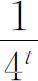
。事实上取t为5时，N不是素数的概率为1/128，N为素数的概率已经大于99.99%。在实际应用中，可首先用300～500个小素数对N进行测试，以提高Miller-Rabin素数测试通过的概率，从而提高测试速度。而在生成随机素数时，选取的随机数最好让r=0，则可省去步骤（3）的测试，进一步提高测试速度。
#include <cstdlib>
#include <ctime>
#include <cstdio>
const int count=10;
int modular_exp（int a，int m，int n）{
if （m==0） return 1;
if （m==1） return （a % n）;
long long w=modular_exp（a，m / 2，n）;
w=w * w % n;
if （m & 1） w=w * a % n;
return w;
}
bool Miller_Rabin（int n）{
if （n==2） return true;
for （int i=0; i < count; i++）{
int a=rand（） % （n-2）+2;
if （modular_exp（a，n，n） !=a） return false;
}
return true;
}
int main（）{
srand（time（NULL））;
int n;
scanf（"%d"，&n）;
if （Miller_Rabin（n）） printf（"Probably a prime＼n"）;
else printf（"A composite＼n"）;
return 0；
}
假如随机选取4个数为2，3，5，7，则在2.5*1013 以内唯一一个判断失误的数为3 215 031 751。
费马定理是用来阐述在素数模下，指数的同余性质。当模是合数的时候，就要应用范围更广的欧拉定理了。
欧拉函数：对正整数n，欧拉函数是小于等于n的数中与n互质的数的数目。
欧拉函数又称为φ函数，例如φ（8）=4，因为1，3，5，7均和8互质。
引理1：
①如果n为某一个素数p，则：φ（p）=p-1；
②如果n为某一个素数p的幂次pa ，则：φ（pa ）=（p-1）*pa-1 ；
③如果n为任意两个互质的数a，b的积，则：φ（a*b）=φ（a）*φ（b）；
证明：
①显然；
②因为比pa 小的正整数有pa -1个。其中，所有能被p整除的那些数可以表示成p*t（t=1，2，…pa-1 -1），即共有pa-1 -1个这样的数能被p整除，从而不与pa 互质。所以φ（pa ）=pa-1 -（pa-1 -1）=（p-1）*pa-1 ；
③在比a*b小的a*b-1个整数中，只有那些既与a互质（有φ（a）个），又与b互质（有φ（b）个）的数，才会与a*b互质。显然满足这种条件的数有φ（a）*φ（b）个。所以φ（a*b）=φ（a）*φ（b）；
比如：要求φ（40），因为40=5*8，且5和8互质，所以：φ（40）=φ（5）*φ（8）=4*4=16。而φ（16）=（2-1）*23 =8。
引理2：
设
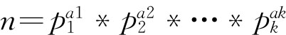
为正整数n的素数幂乘积表示式，则：φ（n）=n*（1-1/p1 ）*（1-1/p2 ）*…*（1-1/pk ）
证明：由于诸素数幂互相之间是互质的，根据引理1得出：
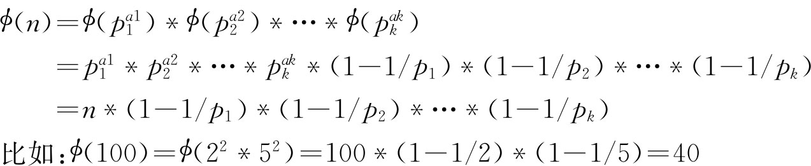
欧拉定理：
若a与m互质，则aφ （m）≡1（mod m）。
大整数分解现在仍然是个世界级的难题，但却是个非常重要的研究方向，大整数在公共密钥的研究上有着重要的作用。
而对于大整数的分解有很多种算法，性能上各有优异，比如大整数分解的Fermat方法、Pollard Rho方法、试除法，以及椭圆曲线法、连分数法、二次筛选法、数域分析法等等。这里，主要讲解其中两种算法的原理和操作。
首先，对于任意的一个偶数，我们都可以提取出一个2的质因子，如果结果仍为偶数，则可继续该操作，直至将其化为一个奇数和2的多少次幂的乘积，那么我们可以假定这个奇数可以被表示成N＝2*n+1，如果这个数是合数，那么一定可以写成N=c*d的形式，不难发现，式中的c和d都是奇数，不妨设c>d，我们可以令a=（c+d）/2，b=（c-d）/2，那么的可以得到N=a*a-b*b，而这正是Fermat整数分解的基础；由不等式的关系，我们又可以得到
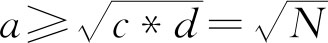
，那么，我们就可以枚举大于N的完全平方数a*a，计算a*a-N的值，判断计算的结果是否为一个完全平方数，如果是，那么a，b都是N的因子，我们就可以将算法递归的进行下去，知道求出N的所有质因子。容易看出，Fermat分解大数的效率其实并不高，但是比起试除法要好了很多。而且每次的计算都是计算出N的一个因子，更加降低了其效率。这就让我们想着去尝试新的算法，于是就有了Pollard Rho算法。
Pollard Rho算法的原理就是通过某种方法得到两个整数a和b，而待分解的大整数为n，计算p=gcd（abs（a-b），n），直到p不为1，或者a，b出现循环为止。然后再判断p是否为n，如果p=n或p=1成立，那么返回n是一个质数，否则返回p是n的一个因子，那么我们又可以递归的计算Pollard（p）和Pollard（n/p），这样，我们就可以求出n的所有质因子。
具体操作中，我们通常使用函数x［i+1］=（x［i］*x［i］+c）mod n来计算逐步迭代计算a和b的值，实践中，通常取c为1，即b=a*a+1，在下一次计算中，将b的值赋给a，再次使用上式来计算新的b的值，当a，b出现循环时，即可退出进行判断。当然，初值由自己确定。
但是这样的话判断循环比较麻烦，我们可以用另一种方法。是由Floyd发明的一个算法，我们举例来说明这个聪明而又有趣的算法。假设我们在一个很长很长的圆形轨道上行走，我们如何知道我们已经走完了一圈呢？当然，我们可以像第一种方法那样做，但是更聪明的方法是让A和B按照B的速度是A的速度的两倍从同一起点开始往前走，当B第一次赶上A时（也就是我们常说的套圈），我们便知道，B已经走了至少一圈了。所以我们可以把x当作B，y当作A进行循环测试，具体实现详见参考程序。
对于Pollard rho，它可以在
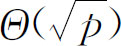
的时间复杂度内找到n的一个小因子p，可见效率还是可以的，但是对于一个因子很少、因子值很大的大整数n来说，Pollard Rho算法的效率仍然不是很好，那么，我们还得寻找更加高效的方法。以下程序是Pollard Rho与Miller-Rabin素数测试配合使用的整数分解算法。
#include <iostream>
#include <stdlib.h>
#include <string.h>
#include <algorithm>
#include <stdio.h>
const int Times=10;
const int N=5500;
using namespace std;
typedef long long LL;
LL ct，cnt;
LL fac[N]，num[N];
LL gcd（LL a，LL b）{
return b？ gcd（b，a % b） : a;
}
LL multi（LL a，LL b，LL m）{
LL ans=0;
a %=m;
while（b）{
if（b & 1）{
ans=（ans+a） % m;
b--;
}
b >>=1;
a=（a+a） % m;
}
return ans;
}
LL quick_mod（LL a，LL b，LL m）{
LL ans=1;
a %=m;
while（b）{
if（b & 1）{
ans=multi（ans，a，m）;
b--;
}
b >>=1;
a=multi（a，a，m）;
}
return ans;
}
bool Miller_Rabin（LL n）{
if（n==2） return true;
if（n < 2 ｜｜ !（n & 1）） return false;
LL m=n-1;
int k=0;
while（（m & 1）==0）{
k++;
m >>=1;
}
for（int i=0; i<Times; i++）{
LL a=rand（） % （n-1）+1;
LL x=quick_mod（a，m，n）;
LL y=0;
for（int j=0; j<k; j++）{
y=multi（x，x，n）;
if（y==1 && x !=1 && x !=n-1） return false;
x=y;
}
if（y !=1） return false;
}
return true;
}
LL pollard_rho（LL n，LL c）{
LL i=1，k=2;
LL x=rand（） % （n-1）+1;
LL y=x;
while（true）{
i++;
x=（multi（x，x，n）+c） % n;
LL d=gcd（（y-x+n） % n，n）;
if（1 < d && d < n） return d;
if（y==x） return n;
if（i==k）{
y=x;
k <<=1;
}
}
}
void find（LL n，int c）{
if（n==1） return;
if（Miller_Rabin（n））{
fac[ct++]=n;
return ;
}
LL p=n;
LL k=c;
while（p >=n） p=pollard_rho（p，c--）;
find（p，k）;
find（n / p，k）;
}
int main（）{
LL n;
while（cin>>n）{
ct=0;
find（n，120）;
sort（fac，fac+ct）;
num[0]=1;
int k=1;
for（int i=1; i<ct; i++）{
if（fac[i]==fac[i-1]）
++num[k-1];
else{
num[k]=1;
fac[k++]=fac[i];
}
}
cnt=k;
for（int i=0; i<cnt; i++）
cout<<fac[i]<<"^"<<num[i]<<" ";
cout<<endl;
}
return 0;
}
【例1.8-1】 阅读下面的程序，写出运行结果（NOIP2005初赛高中组）
#include <stdio.h>
long g（long k）{
if （k <=1） return k;
return （2002 * g（k-1）+2003 * g（k-2）） % 2005;
}
int main（）{
long n;
scanf（"%ld"，&n）;
printf（"%ld＼n"，g（n））;
return 0;
}
输入：2005
输出：
【问题分析】
分析题意，实际上是已知：
n≤1时，g（n）=n
n>1时，g（n）=［2002*g（n-1）+2003*g（n-2）］ mod 2005
求：g（2005）。
解答如下：
因为：g（0）=0，g（1）=1
g（n）=［2002*g（n-1）+2003*g（n-2）］ mod 2005
等价于：g（n）=［-3 * g（n-1）-2 * g（n-2）］ mod 2005
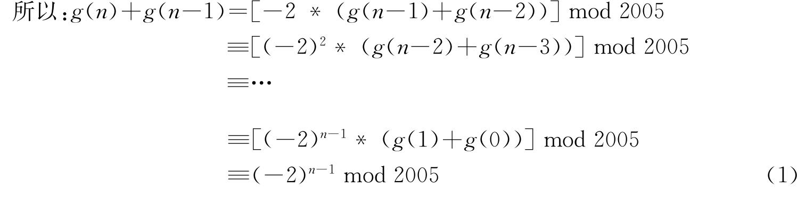
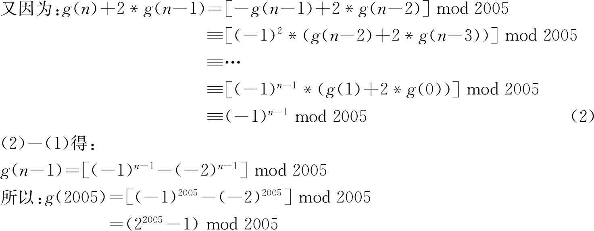
下面可以用费马定理（若P为质数，则ap mod p=a，特别地当a，p互质时，ap-1 mod p=1）和同余理论（同乘性：若a mod m=b，c mod m=d，则ac mod m=bd；同幂性：若a mod m=b，则an mod m=bn ）做。
因为：24 mod 5=1
所以：2400 mod 5=1（同幂）
2401 mod 5=2（同乘）
因为：2401 mod 401=2（费马定理）
而（5，401）=2005
所以：2401 mod 2005=2（推理结论）
所以：22005 mod 2005=25 =32（同幂）
所以：g（2005）=32-1=31
得出如下等价的验证程序：
#include <iostream>
using namespace std;
int n，s=1;
int main（）{
scanf（"%d"，&n）;
for （int i=0;i<n;i++） s=s*2%2005;
printf（"%d＼n"，s-1）;
}
【例1.8-2】 Visible Lattice Points（POJ3090）
【问题描述】
从原点看第一象限里的所有点，能直接看到的点的数目是多少（不包含原点）。
【输入格式】
第一行为测试数据的组数C（1≤C≤1000）。
以下C行，每行为一个N（1≤N≤1000），表示范围。
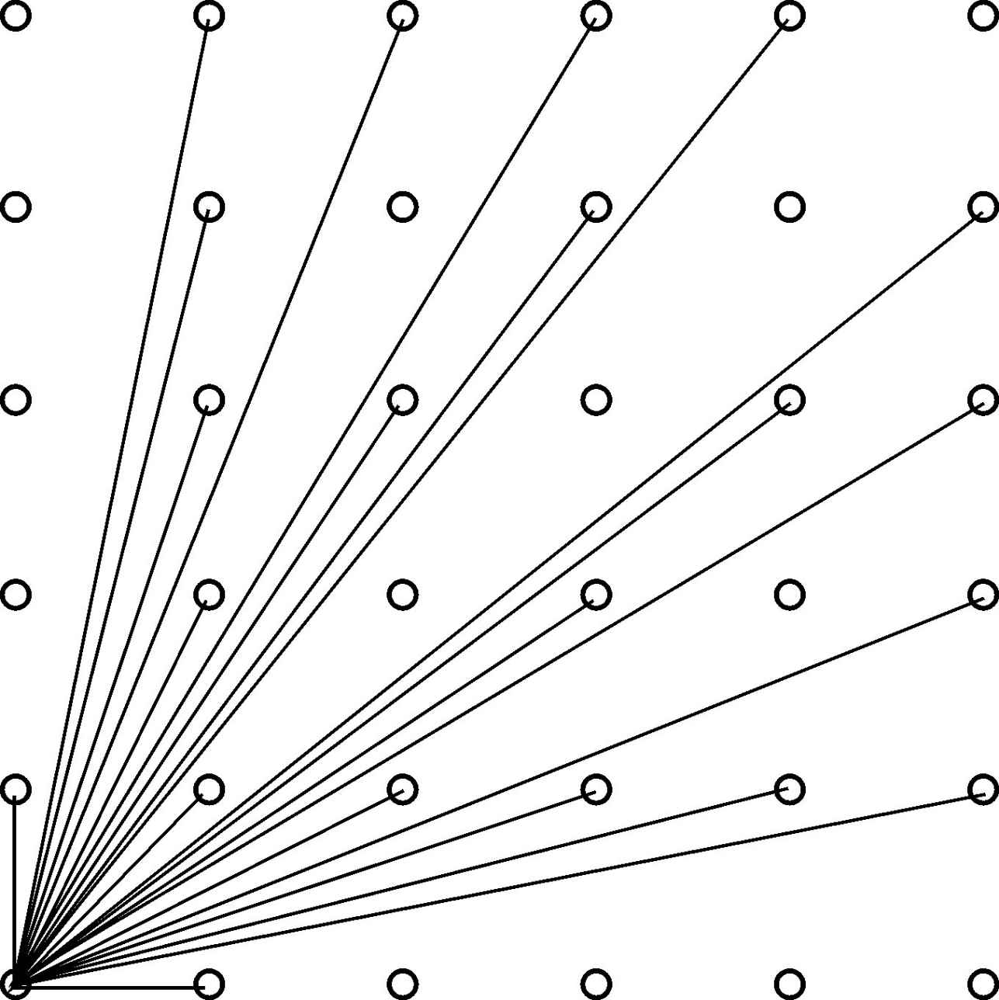
图1.8-1 从原点看点
【输出格式】
对于每一组测试数据，输出一行一个数，表示答案。
【输入和输出样例】
| poj3090.in | poj3090.out |
| 4 | 5 |
| 2 | 13 |
| 4 | 21 |
| 5 | 32549 |
| 231 |
【问题分析】
首先，题目主要是求从（0，0）能看到的点的个数。
先考虑只有1*1的时候，三个点，根据图明显看出，只需要计算下三角，结果=下三角的个数*2再加1（斜率为1的点）。
那么我们只需要计算斜率从0到1之间的个数就行了，不包括1，包括0。结果设为sum，那么最终就是2*sum+1。
1*1只有一个斜率为0的。
2*2斜率有0，1/2（0已经算过了，以后不再算了），其实就多了一个斜率为1/2的。
3*3的时候，有1/3，2/3两个，比以前多了2个。
4*4的时候，有1/4，2/4（1/2已经有过了），3/4，所以也是2个。
5*5的时候，有1/5，2/5，3/5，4/5，之前都没有，所以多了4个。
6*6得到时候，有1/6，2/6（1/3已经有了），3/6（1/2已经有了），4/6（2/3已经有了），5/6，所以只剩2个。
…
从上面可以发现一个规律，对于n*n，可以从0，0连接到（n，0）到（n，n）上，斜率将会是1/n，2/n…（n-1）/n。
凡是分子和分母能够约分的，也就是有公约数，前面都已经有过了。所以每次添加的个数就是分子和分母互质的个数。
那么问题就转换为，对于一个数n，求小于n的于n互质的数的个数，这不就是欧拉函数么!
【参考程序】
#include<iostream>
#include<stdio.h>
#include<stdlib.h>
#include<string.h>
#include<math.h>
#include<algorithm>
#include<queue>
#include<set>
#include<map>
#include<bitset>
#include<vector>
using namespace std;
bool vis[1005];
int phi[1005]，p[1005];
int n，ans;
int T;
int main（）
phi[1]=1;
for（int i=2;i<=1000;i++）{
if（!vis[i]）
p[++p[0]]=i，phi[i]=i-1;
for（int j=1;j<=p[0]&&i*p[j]<=1000;j++）{
vis[i*p[j]]=1;
if（i%p[j]==0）{
phi[i*p[j]]=phi[i]*p[j];
break;
}
else
phi[i*p[j]]=phi[i]*（p[j]-1）;
}
ans+=phi[i];
}
scanf（"%d"，&T）;
while（T--）{
scanf（"%d"，&n）;
ans=0;
for（int i=1;i<=n;i++）
ans+=phi[i];
printf（"%d＼n"，ans*2+1）;
}
return 0;
}
先来了解一个概念：离散对数。离散对数是一种在整数中基于同余运算和原根的对数运算。当模m有原根时，设G为模m的一个原根，则当:x≡G^k（mod m）时，logG （x）≡k（mod φ（m））。此处的logG （x）是x以整数G为底模φ（m）的离散对数值。
Baby-Step-Giant-Step（简称BSGS）及扩展算法（Extended BSGS）用来求解A^x≡B（mod C）（0≤x<C）这样的问题，是以空间换时间，对穷举算法的一个改进。
原始的BSGS只能解决C为素数的情况。
设m= 上取整，x=i*m+j，那么A^x=（A^m）^i*A^j，0≤i<m，0≤j<m。然后可以枚举i，这是
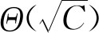
级别的枚举。对于一个枚举出来的i，令D=（A^m）^i。现在问题转化为求D*A^j≡B（mod C）。如果把A^j当作一个整体，那么套上扩展欧几里德算法就可以解出来了（而且因为C是质数，A是C的倍数的情况容易特判，除此之外必有GCD（D，C）=1，所以一定有解）。
求出了A^j，现在的问题就是我怎么知道j是多少？一个非常聪明的方法，先用
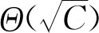
的时间，将A^j全部存进hash表里面。然后只要查表就在Θ(1)的时间内知道j是多少了。代码实现如下：
#include <cmath>
#include <cstdio>
#include <cstring>
#include <algorithm>
typedef long long Int64;
class Hash{
static const int HASHMOD=7679977;
int top，hash[HASHMOD+100]，value[HASHMOD+100]，stack[1<<16];
int locate（const int x） const{
int h=x % HASHMOD;
while （hash[h] !=-1 && hash[h] !=x）++h;
return h;
}
public:
Hash（）: top（0） { memset（hash，0xFF，sizeof（hash））; }
void insert（const int x，const int v）{
const int h=locate（x）;
if （hash[h]==-1）
hash[h]=x，value[h]=v，stack[++top]=h;
}
int get（const int x） const{
const int h=locate（x）;
return hash[h]==x ？ value[h] :-1;
}
void clear（） { while （top） hash[stack[top--]]=-1; }
} hash;
struct Triple{
Int64 x，y，z;
Triple（const Int64 a，const Int64 b，const Int64 c）: x（a），y（b），z（c） { }
};
Triple ExtendedGCD（const Int64 a，const Int64 b）{
if （b==0） return Triple（1，0，a）;
const Triple last=ExtendedGCD（b，a%b）;
return Triple（last.y，last.x-a / b * last.y，last.z）;
}
int A，B，C;
Int64 BabyStep（Int64 A，Int64 B，Int64 C）{
const int sqrtn=static_cast<int>（std::ceil（std::sqrt（C）））;
Int64 base=1;
hash.clear（）;
for （int i=0; i < sqrtn;++i）{
hash.insert（base，i）;
base=base*A % C;
}
Int64 i=0，j=-1，D=1;
for （; i < sqrtn;++i）{
Triple res=ExtendedGCD（D，C）;
const int c=C / res.z;
res.x=（res.x * B / res.z % c+c） % c;
j=hash.get（res.x）;
if （j !=-1） return i * sqrtn+j;
D=D * base % C;
}
return-1;
}
int main（）{
while （scanf（"%d%d%d"，&C，&A，&B） !=EOF）{
const Int64 ans=BabyStep（A，B，C）;
if （ans==-1）
printf（"no solution＼n"）;
else
printf（"%I64d＼n"，ans）;
}
}
扩展的BSGS不要求C为素数。大致的做法和原始的BSGS一样，只是做些修改。因为同余具有一条性质：
令d=GCD（A，C），A=a*d，B=b*d，C=c*d
则a*d≡b*d（mod c*d）
等价于a≡b（mod c）
因此，开始前，我们先执行消除因子：
D=1，cnt=0
while gcd（A，C） !=1
｛
if （B % gcd（A，C） !=0）
No Solution
B /=gcd（A，C）
C /=gcd（A，C）
D *=A / gcd（A，C）
cnt+=1
｝
执行完了以后，问题变成了求D * A^（x-cnt）≡B（mod C），令x=i * m+j+cnt，后面的做法就跟BSGS一样了。
但是注意到i，j≥0，因此x≥cnt，但是我们明显存在小于等于cnt的情况，所以在消因子之前要做一次Θ(log2 (C))的枚举，直接验证A^i % C=B，这样就避免了这种情况。
代码实现如下：
#include <cmath>
#include <cstdio>
#include <cstring>
#include <algorithm>
typedef long long Int64;
class Hash{
static const int HASHMOD=3894229;
int top，hash[HASHMOD+100]，value[HASHMOD+100]，stack[1<<16];
int locate（const int x） const{
int h=x % HASHMOD;
while （hash[h] !=-1 && hash[h] !=x）++h;
return h;
}
public:
Hash（）: top（0） { memset（hash，0xFF，sizeof（hash））; }
void insert（const int x，const int v）{
const int h=locate（x）;
if （hash[h]==-1）
hash[h]=x，value[h]=v，stack[++top]=h;
}
int get（const int x） const{
const int h=locate（x）;
return hash[h]==x ？ value[h] :-1;
}
void clear（） { while （top） hash[stack[top--]]=-1; }
} hash;
struct Triple{
Int64 x，y，z;
Triple（） { }
Triple（const Int64 a，const Int64 b，const Int64 c）: x（a），y（b），z（c） { }
};
Triple ExtendedGCD（const int a，const int b）{
if （b==0） return Triple（1，0，a）;
const Triple last=ExtendedGCD（b，a%b）;
return Triple（last.y，last.x-a / b * last.y，last.z）;
}
int ExtendedBabyStep（int A，int B，int C）{
Int64 tmp=1，cnt=0，D=1;
for （int i=0; i < 32;++i）{
if （tmp==B） return i;
tmp=tmp * A % C;
}
for （Triple res; （res=ExtendedGCD（A，C））.z !=1;++cnt）{
if （B % res.z） return-1;
B /=res.z，C /=res.z;
D=D * A/res.z % C;
}
const int sqrtn=static_cast<int>（std::ceil（std::sqrt（C）））;
hash.clear（）;
Int64 base=1;
for （int i=0; i < sqrtn;++i）{
hash.insert（base，i）;
base=base * A % C;
}
Int64 j=-1，i;
for （i=0; i < sqrtn;++i）{
Triple res=ExtendedGCD（D，C）;
const int c=C / res.z;
res.x=（res.x * B/res.z % c+c） % c;
j=hash.get（res.x）;
if （j !=-1） return i * sqrtn+j+cnt;
D=D * base % C;
}
return-1;
}
int main（）{
for （int a，b，c; scanf（"%d%d%d"，&a，&c，&b） !=EOF && （a ｜｜ b ｜｜ c）; ）{
b %=c;
const int ans=ExtendedBabyStep（a，b，c）;
if （ans==-1）
printf（"No Solution＼n"）;
else
printf（"%d＼n"，ans）;
}
return 0;
}
【例1.9-1】 Discrete Logging（POJ2417）
【问题描述】
题目大意是：对于A^x≡B（mod C），已知A，B，C，其中C为素数，求x。
【输入格式】
多组测试数据，每组一行3个数依次为C，A，B。2≤A<C<231 ，1≤B<C。
【问题描述】
对于每组测试数据，输出一行一个数，表示最小的x。无解输出一行字符串“no solution”。
【输入和输出样例】
| poj2417.in | poj2417.out |
| 5 2 1 | 0 |
| 5 2 2 | 1 |
| 5 2 3 | 3 |
| 5 2 4 | 2 |
| 5 3 1 | 0 |
| 5 3 2 | 3 |
| 5 3 3 | 1 |
| 5 3 4 | 2 |
| 5 4 1 | 0 |
| 5 4 2 | no solution |
| 5 4 3 | no solution |
| 5 4 4 | 1 |
| 12345701 2 1111111 | 9584351 |
| 1111111121 65537 1111111111 | 462803587 |
【问题分析】
本题的C是素数，所以，直接使用普通的BSGS。
在寻找最小的x的过程中，将x设为i*M+j。从而原式变为A^M^i*A^j≡B（mod C），D=A^M，那么D^i*A^j≡B（mod C），预先将A^j存入hash表中，然后枚举i（0～M-1），根据扩展欧几里得求出A^j，再去hash表中查找相应的j，那么x=i*M+j。确定x是否有解，就是在循环i的时候判断相应A^j是否有解，而且最小的解x一定在（0～C-1），因为GCD（D^i，C）=1。如果（0～C-1）无解，那么一定无解。因为A^x%C（C是素数）有循环节，A^x%C=A^（x%phi［c］）%C，循环节的长度为phi（C），即C-1，x>=C以后开始新一轮的循环，因此（0～C-1）内无解的话，一定无解。
【参考程序】
#include<stdio.h>
#include<math.h>
using namespace std;
#define LL long long
const int sqr=46340;
bool hash[sqr+10];
int j[sqr+10];
LL val[sqr+10];
void insert（int jj，LL vv） {//插入哈希表
int v=vv%sqr;
while（hash[v]&&val[v]!=vv）{
v++;
if（v==sqr）
v-=sqr;
}
if（!hash[v]）{
hash[v]=1;
j[v]=jj;
val[v]=vv;
}
}
int found（LL vv）{//查找vv对应的jj，A^jj=vv
int v=vv%sqr;
while（hash[v]&&val[v]!=vv）{
v++;
if（v==sqr）
v-=sqr;
}
if（hash[v]==0）
return-1;
return j[v];
}
LL exgcd（LL a，LL b，LL &x，LL &y）{
if（b==0）{
x=1，y=0;
return a;
}
LL gcd=exgcd（b，a%b，x，y）;
LL t=x;
x=y;
y=t-a/b*y;
return gcd;
}
/*
A^x=B（mod C）
令x=i*M+j，其中M=ceil（sqrt（C*1.0）），（0 <=i，j < M）
那么原式变为A^M^i*A^j=B（mod c）
先枚举j（0～M-1），将A^j%C存入hash表中
令D=A^M%C，X=A^j，那么D^i*X=B（mod C）
枚举i（0～M-1）求得D^i设为DD，DD*X=B（mod C）
DD，C已知，根据扩展欧几里得求出X，在hash表中查找X对应的jj，即A^jj=X
那么x=i*M+jj，若找不到jj无解
*/
LL baby_step（LL A，LL B，LL C）{
for（int i=0;i<=sqr+9;i++）hash[i]=0，val[i]=j[i]=0;
LL M=ceil（sqrt（C*1.0））;//将A^j存入hash表中
LL D=1;
for（int j=0;j<M;j++）{
insert（j，D）;
D=D*A%C;
}
//D=A^M%C，res=D^i，求方程res*X=B（mod C）中的X，去找X对应的jj，那么x=i*M+jj
LL res=1，x，y;
for（int i=0;i<M;i++）{
exgcd（res，C，x，y）;
x=x*B;
x=（x%C+C）%C;
int j=found（x）;
if（j!=-1）
return （LL）i*M+j;
res=res*D%C;
}
return-1;
}
int main（）{
LL A，B，C;
while（～scanf（"%lld %lld %lld"，&C，&A，&B））{
LL x=baby_step（A，B，C）;
if（x==-1）
printf（"no solution＼n"）;
else
printf（"%lld＼n"，x）;
}
return 0;
}
该算法可以在线性时间内筛素数的同时求出所有数的欧拉函数，需要用到以下3个性质（其中的p为质数）。
性质1. φ（p）=p-1
因为质数p除了1以外的因数只有p，故1至p的整数只有p与p不互质。
性质2.如果i mod p=0，那么φ（i*p）=p*φ（i）
证明：
设b=GCD（n，i）；
因为n，i不互质，所以n=k1 b,i=k2 b。
因为n+i=(k1 +k2 )b，所以n+i与i不互质。
［1,i］中与i不互质的整数n共i-φ（i）个。
因为n+i与i不互质，所以［1+i,i+i］，即(i,2i］中与i不互质的整数也是i-φ（i）个，所以［1,i+p］中与i不互质的整数p*i-p*φ（i）个。
因为i mod p=0，i与p没有不同的因数，［1,i*p］中与i*p不互质的整数数量p*i-p*φ*i-=i*p-φ(i*p)。
所以：φ(i*p)=p*φ(i)。
上面的过程证明了从区间［1，i］到［i+1，i+i］，若整数n不与i互质，n+i依然与i不互质。
下面给出另一个证明：若整数n与i互质，n+i与i依然互质。
因为GCD（n，m）=1，所以GCD（n+m，m）=1。
假设n+m与m不互质。
设b=gcd(n+m,m)，则
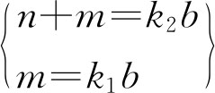
且k2 ,k1 为整数所以：k1 b+n=k2 b。
所以：n=(k2 -k1 )b。
因为：k3 =(k2 -k1 )也是整数，所以：n=k3 b。
与GCD（n，m）=1矛盾。
性质3.若i mod p≠0，那么φ（i*p）=φ（i）*（p-1）
i mod p不为0且p为质数，所以i与p互质，那么根据欧拉函数的积性φ（i*p）=φ（i）*φ（p），其中φ（p）=p-1即第1条性质。
代码实现如下：
#include<iostream>
#include<cstdio>
#define N 40000
using namespace std;
int n;
int phi[N+10]，prime[N+10]，tot，ans;
bool mark[N+10];
void getphi（）{
int i，j;
phi[1]=1;
for（i=2;i<=N;i++）{ //相当于分解质因式的逆过程
if（!mark[i]）{
prime[++tot]=i;//筛素数的时候首先会判断i是否是素数。
phi[i]=i-1;//当 i 是素数时 phi[i]=i-1
}
for（j=1;j<=tot;j++）{
if（i*prime[j]>N） break;
mark[i*prime[j]]=1; //确定i*prime[j]不是素数
if（i%prime[j]==0）{//接着我们会看prime[j]是否是i的约数
phi[i*prime[j]]=phi[i]*prime[j];break;
}
else phi[i*prime[j]]=phi[i]*（prime[j]-1）;
//其实这里prime[j]-1就是phi[prime[j]]，利用了欧拉函数的积性
}
}
}
int main（）{
getphi（）;
return 0;
}
【例1.10-1】 Farey Sequence（POJ2478）
【问题描述】
对于一个大于1的整数n，存在这样一个分数集合序列F，Fi =a/b，其中：0<a<b≤n，且GCD（a，b）=1。前几项分别为：
F2 ={1/2}
F3 ={1/3，1/2，2/3}
F4 ={1/4，1/3，1/2，2/3，3/4}
F5 ={1/5，1/4，1/3，2/5，1/2，3/5，2/3，3/4，4/5}
你的任务是，输入n，2≤n≤106 ，输出Fn 中的项数。
【输入格式】
多组测试数据，每组一行一个数n。n=0表示结束。
【问题描述】
对于每组测试数据，输出一行一个数，表示Fn 中的分数个数。
【输入和输出样例】
| poj2478.in | poj2478.out |
| 2 | 1 |
| 3 | 3 |
| 4 | 5 |
| 5 | 9 |
| 0 |
【问题分析】
题目的本质就是求欧拉函数的前n项和。欧拉函数φ（n）表示小于n的正整数中有多少个数与n互质。
由于输入数据的数目非常大，所以要考虑一次性预处理出n≤106 的欧拉函数。因为欧拉函数是个积性函数，所以直接用“欧拉函数的线性筛法”。
【参考程序】
#include<iostream>
#include<stdio.h>
#include<stdlib.h>
#include<string.h>
#include<math.h>
#include<algorithm>
using namespace std;
int n，a[1000001]，b[100000]，f[1000001]，p;
long long s[1000001];
int main（）{
int i，j;
n=1000000;
for（i=2;i<=n;i++）
a[i]=0;
for（i=2;i<=n;i++）{
if（a[i]==0）{
a[i]=i;
b[++p]=i;
}
for（j=1;j<=p && i*b[j]<=n;j++）{
a[i*b[j]]=b[j];
if（i%b[j]==0）
break;
}
}
f[1]=1;
for（i=2;i<=n;i++）
if（a[i/a[i]]==a[i]）
f[i]=f[i/a[i]]*a[i];
else
f[i]=f[i/a[i]]*（a[i]-1）;
for（i=2;i<=n;i++）
s[i]=s[i-1]+f[i];
while（scanf（"%d"，&n）!=EOF）{
if（n==0）
break;
cout<<s[n]<<"＼n";
}
system（"pause"）;
return 0;
}
1．素数（primenum.*，64 MB，1秒）
【问题描述】
给定一个正整数N，求出1到N中有多少个素数。
【输入格式】
输入一行一个正整数N。
【输出格式】
输出一行一个整数，表示1到N中有多少个素数。
【输入样例】
10
【输出样例】
4
【数据范围】
对于30%的数据：N≤100
对于70%的数据；N≤5000
对于100%的数据：N≤10000000
2．超素表达式（hyper.*，64 MB，3秒）
【问题描述】
考虑如下定义的特殊表达式：
（1）数字1，2，3，5，7都是合法表达式；
（2）若a是合法表达式，a!也是；
（3）若a，b都合法，则（a+b），（a*b），（a^b）都是合法表达式。
对一个特定的值，超素表达式给出按以上规则定义的由最少数字组成的表达式。例如：（（（3*（2*2））^2）*5）和3!!都是720的合法表达式，但只有后者才是超素表达式。
现在请你编个程序，对于输入的整数，输出它的超素表达式。
【输入格式】
输入一行一个整数n（0<n≤20000）。
【输出格式】
输出一行，包含一个要求的超素表达式。
注意：结果可能不唯一，你只要输出任何一个。
【输入样例】
14
【输出样例】
（2*7）
3． Antiprime数（ant.*，64 MB，1秒）
【问题描述】
如果一个自然数n满足：所有小于它的自然数的约数个数都小于n的约数个数，则n是一个Antiprime数。譬如：1，2，4，6，12，24都是Antiprime数。
【输入格式】
输入一行一个整数n（1≤n≤2*109 ）。
【输出格式】
输出一行一个整数，即不大于n的最大Antiprime数。
【输入样例】
1000
【输出样例】
840
4．小三学算术（a.*，64 MB，1秒）
【问题描述】
小三的三分球总是很准的，但对于数学问题就完全没有想法了，他希望你来帮他解决下面的这个问题：对于给定的n，从1!、2!、3!、…、n!中至少删去几个数，才可以使剩下的数的乘积为完全平方数？
【输入格式】
输入一行一个整数n（1≤n≤500）。
【输出格式】
输出第一行包含一个整数k，表示最少需要删去的数字个数。
接下来一行，从小到大排列的k个［1，n］之间的整数，给出删数的方案。如果方案不止一种，输出任意一组即可。
【输入样例】
5
【输出样例】
2
2 5
【样例说明】
去掉2!和5!，剩下的是4!、3!和1!，它们的乘积为4!*3!*1!=24*6=144。
5． C Looooops（POJ2115）
【问题描述】
A Compiler Mystery: We are given a C-language style for loop of type for（variable=A; variable !=B; variable+=C）
statement;
a loop which starts by setting variable to value A and while variable is not equal to B，repeats statement followed by increasing the variable by C. We want to know how many times does the statement get executed for particular values of A，B and C，assuming that all arithmetics is calculated in a k-bit unsigned integer type（with values 0≤x<2k ）modulo 2k ．
【输入格式】
The input consists of several instances. Each instance is described by a single line with four integers A，B，C，k separated by a single space. The integer k（1≤k≤32）is the number of bits of the control variable of the loop and A，B，C（0≤A，B，C≤2k ）are the parameters of the loop.
The input is finished by a line containing four zeros．
【输出格式】
The output consists of several lines corresponding to the instances on the input. The i-th line contains either the number of executions of the statement in the i-th instance（a single integer number）or the word FOREVER if the loop does not terminate．
【输入样例】
3 3 2 16
3 7 2 16
7 3 2 16
3 4 2 16
0 0 0 0
【输出样例】
0
2
32766
FOREVER
6． The Balance（POJ2142）
【问题描述】
Ms.Iyo Kiffa-Australis has a balance and only two kinds of weights to measure a dose of medicine. For example，to measure 200 mg of aspirin using 300 mg weights and 700 mg weights，she can put one 700 mg weight on the side of the medicine and three 300 mg weights on the opposite side（Figure 1）. Although she could put four 300 mg weights on the medicine side and two 700 mg weights on the other（Figure 2），she would not choose this solution because it is less convenient to use more weights.
You are asked to help her by calculating how many weights are required．
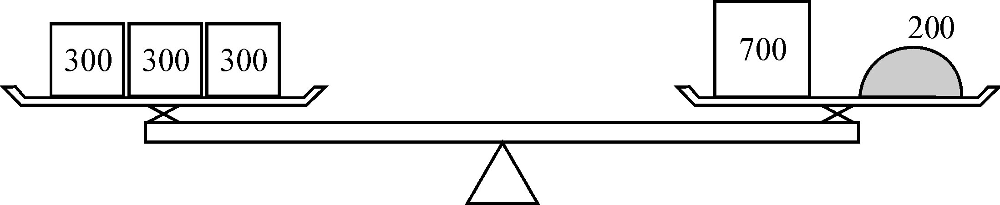
Figure 1: To measure 200 mg of aspirin using three 300 mg weights and one 700 mg weight
Figure 2: To measure 200 mg of aspirin using four 300 mg weights and two 700 mg weights
图1.11-1 天平
【输入格式】
The input is a sequence of datasets. A dataset is a line containing three positive integers a，b，and d separated by a space. The following relations hold: a !=b，a≤10000，b≤10000，and d≤50000. You may assume that it is possible to measure d mg using a combination of a mg and b mg weights.In other words，you need not consider "no solution" cases.
The end of the input is indicated by a line containing three zeros separated by a space. It is not a dataset．
【输出格式】
The output should be composed of lines，each corresponding to an input dataset（a，b，d）. An output line should contain two nonnegative integers x and y separated by a space. They should satisfy the following three conditions.
（1）You can measure dmg using x many amg weights and y many bmg weights.
（2）The total number of weights（x+y）is the smallest among those pairs of nonnegative integers satisfying the previous condition.
（3）The total mass of weights（ax+by）is the smallest among those pairs of nonnegative integers satisfying the previous two conditions．
No extra characters（e.g. extra spaces） should appear in the output．
【输入样例】
700 300 200
500 200 300
500 200 500
275 110 330
275 110 385
648 375 4002
3 1 10000
0 0 0
【输出样例】
1 3
1 1
1 0
0 3
1 1
49 74
3333 1
7． Strange Way to Express Integers（POJ2891）
【问题描述】
Elina is reading a book written by Rujia Liu，which introduces a strange way to express non-negative integers.The way is described as following:
Choose k different positive integers a1 ，a2 ，…，ak .For some non-negative m，divide it by every ai （1≤i≤k）to find the remainder ri . If a1 ，a2 ，…，ak are properly chosen，m can be determined，then the pairs（ai ，ri ）can be used to express m．
“It is easy to calculate the pairs from m”said Elina.“But how can I find m from the pairs？”
Since Elina is new to programming，this problem is too difficult for her. Can you help her？
【输入格式】
The input contains multiple test cases. Each test cases consists of some lines．
Line 1: Contains the integer k．
Lines 2～k+1: Each contains a pair of integers ai ，ri （1≤i≤k）．
【输出格式】
Output the non-negative integer m on a separate line for each test case.If there are multiple possible values，output the smallest one.If there are no possible values，output-1．
【输入样例】
2
8 7
11 9
【输出样例】
31
8． X问题（HDU1573）
【问题描述】
求在小于等于N的正整数中有多少个X满足：X mod a［0］=b［0］，X mod a［1］=b［1］，X mod a［2］=b［2］，…X mod a［i］=b［i］，…（0<a［i］≤10）。
【输入格式】
输入数据的第一行为一个正整数T，表示有T组测试数据。
每组测试数据的第一行为两个正整数N，M（0<N≤109 ，0<M≤10），表示X小于等于N，数组a和b中各有M个元素。
接下来两行，每行各有M个正整数，分别为a和b中的元素。
【输出格式】
对于每组输入，输出一行一个正整数，表示满足条件的X的个数。
【输入样例】
3
10 3
1 2 3
0 1 2
100 7
3 4 5 6 7 8 9
1 2 3 4 5 6 7
10000 10
1 2 3 4 5 6 7 8 9 10
0 1 2 3 4 5 6 7 8 9
【输出样例】
1
0
3
9． Clever Y（POJ3243）
【问题描述】
题目大意是：对于A^x≡B（mod C），已知A，B，C，求满足条件的最小x。
【输入格式】
不超过20组测试数据，每组一行3个数依次为A，B，C，0≤A，B，C≤109 。一行“0 0 0”表示结束。
【问题描述】
对于每组测试数据，输出一行一个数，表示最小的x。无解输出一行字符串“No Solution”。
【输入和输出样例】
| poj3243.in | poj3243.out |
| 5 58 33 | 9 |
| 2 4 3 | No Solution |
| 0 0 0 |
————————————————————
(1) church.*表示该题输入文件名为church.in,输出文件名为church.out，源程序名为church.cpp、church.pas等，下同。
(2) 64 MB为空间限制，下同。
(3) 1秒为每个测试定的时间限制，下同。
(4) a≡b(mod n)表示a和b关于模n同余。